General Lab Notebook ¶
Shantel A. Martinez | Update 2019.05.02¶
This General Lab Notebook contains summaries, data analysis, bioinformatics, and all the remaining notes not included in the other specific notebooks. When topics overlap, links to other notebook are added for reference.
*This notebook is divided up into 4 project sections (hormone, mapping, GWAS, and GP) and within those sections you will see an additional table of contents for each. The most recent entries are added to the top of the section, with the oldest entry closer to the bottom. Even though it is in reverse of a physical lab notebook, it shows the most relevant information first, with older/irrelevant analysis later.*
TABLE OF CONTENTS:
General Lab Protocols
General Notes
Wet Lab Notebook : notes on experiments
Field and Greenhouse Notebook : notes specific to field and greenhouse trials
Cayuga/Caledonia
Hormone Profiling
Cayuga Mapping
Preharvest Sprouting
Genomic Prediction
GWAS & Data Exploration
**Miscellaneous**
R. Bernardo Cheat Sheet and R. Bernardo Notes
TaSdr-B1 gene exploratory notes
General Research Experiment Photo Album
CURRENT TO DO LIST¶
Notes on thoughts and to do lists are also kept, however once moved from a thought to an actual piece of analysis or work, they are moved to this notebook.
GENOMIC PREDICTION¶
TABLE OF CONTENTS:
Preharvest Sprouting
Genomic Prediction
PHS GS Initial analysis:v1 correct myGD:v2
GWAS & Data Exploration
Heading Date and PM Harvest Date Analysis and Summary
GS¶
2019.03.18
Picking the GS project back up, with the following aim:
- Run the simple all env model comparison with a one-step approach
- Run the one-step approach across years (DID NOT GET WORKING)
White: The following lines have phenotypes but no genotypes: cuGS14 cuGS42 cuGS44 cuGS56 cuGS73 cuGS88 cuGS179 cuGS180 cuGS207 cuGS266 cuGS299 cuGS309 cuGS340 cuGS418 cuGS430 cuGS583 cuGS674 cuGS678 cuGS679 cuGS766 cuGS769 cuGS773 cuGS789 cuGS790 cuGS796 cuGS927 cuGS938 cuGS974 cuGS998 cuGS1043 cuGS1084 cuGS1371 MSU104 MSU15 MSU26 MSU48 MSU6 MSU8 MSU82 MSU95
Red: The following lines have phenotypes but no genotypes: cuGS180 cuGS186 cuGS194 cuGS197 cuGS208 cuGS210 cuGS211 cuGS251 cuGS266 cuGS401 cuGS434 cuGS662 cuGS777 cuGS781 MSU52 MSU53 MSU84 OH2 cuGS202 cuGS207
I was able to get all environments running in the one-step approach for rrBLUP.
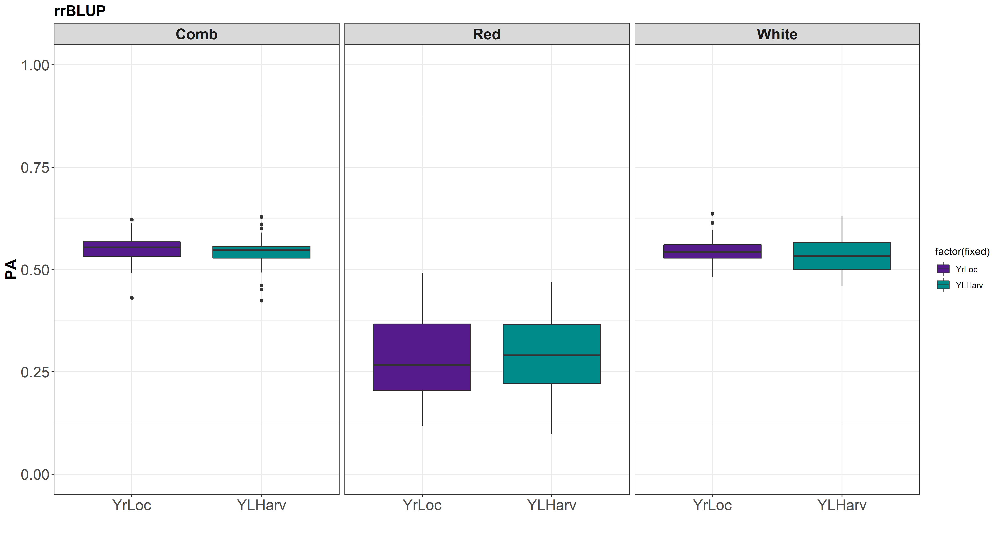
The models ran here are:
- Y ~ GID+Loc+Yr
- Y ~ GID+Loc+Yr+HarvD
I still cant get Y ~ GID+Loc+Yr+HarvD+HD to work properly. It says there are lines with pheno but no geno. This is just a matter of checking the dataframes/subsets to make sure they all agree, but it shouldnt change between models.
PHS <- rm_na(PHS, "Harvest")I do have to take out the rows with no harvest date to run analysis, and the same thing for heading date (HD), etc. Maybe I need to be doing this BEFORE I align the geno and pheno to cross check for matching lines? I dont see why I can fixed this after the pheno and geno lines have been aligned, especially since I am only reducing the pheno file, all of the genotypes should remain un-touched. By aligned, I mean all the lines in the pheno file appear in the geno file, and no pheno-line is missing in the geno file.
2019.04.10 Currently working in PHS GS v15.R
As for RKHS: the BGLR command is not working on the dataframes we are inputting.
ETA1<-list(list(~factor(Year)+factor(Loc),
data=train,model='FIXED'),
list(K=U,model='RKHS'))
fm1<-BGLR(y=train$RawMean,ETA=ETA1,nIter=nIter, burnIn=burnIn)
ETA2<-list(list(K=U,model='RKHS'))
fm2<-BGLR(y=train$RawMean,ETA=ETA2,nIter=nIter, burnIn=burnIn)
I dont know if its the addition of the fixed effect parameters, the way we subsetted the training set or what. Neither ETA1with fixed effects or ETA2 without fixed effects run. I am currently trying the bglr() command with fixed effects on un-subsetted data (100% lines) to see if its the subsetting.
It wasnt the subsetting, I had assumed the
bglrwould make the design matrix for you, and it does not. I found the paper by Perez and Campos et al., 2014: Example 2 to be very helpful.
Well, I figured out that I dont need to make a design matrix first, BGLR does that internally.
NOT SURE IF THIS IS TRUE YET
For the years analysis, rrBLUP does not want to analyzed the tbl_df PHSYr which is a product of subsetting in tibble. It is a dataframe, but a tibble dataframe.
I think I may not be aligning the same lines to one another with this subsetting code:
tpred <- pred$pred; tpred[which(i!=tst)]<-NA ; tpred <- tpred[!is.na(tpred)]
tobsu <- obsu$BLUP; tobsu[which(i!=tst)]<-NA ; tobsu <- tobsu[!is.na(tobsu)]I need to make sure the line names are exactly the same, and then check the correlations. I am running into issues when the I analyze the model Y ~ GID+Loc+Yr+HarvD+HeadD and the observed tobsu vector is a different length than the predicted values. I dont know why this is the case though.

Lab Meeting PHS GWAS and Genomic Selection Update:
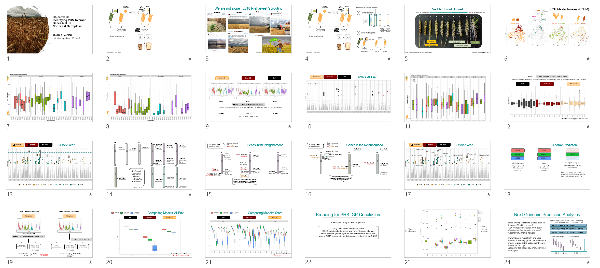
I was having a ton of issues with reanalyzing my data for a 1-step approach.
- I need to figure out why myGDal has no MSU or OH names, it all has to do with taking out cuGS, it just took out everything else. Fix this still In order to subset correctly, I need to
I figured it out, but now I need to re-org how my G matrix is not the same as my Y matrix, reasonably because I plan to calc Y estimates in the rrBLUP GS run, so how can they be the same? Move onto GWAS, not going to get this done this weekend
Dan and I figured it out. Initially he thought that maybe the matrixes dont line up, but they did, or maybe some lines are in one and not the other, but the dimensions lines up. But when I ran kin.blup instead of mixed.solve, this error came out (more explanatory) than the mixed.solve error. The following lines have phenotypes but no genotypes:
cuGS180 cuGS186 cuGS194 cuGS197 cuGS208 cuGS210 cuGS211 cuGS251 cuGS266 cuGS401 cuGS434 cuGS662 cuGS777 cuGS781 MSU52 MSU53 MSU84 OH2 cuGS202 cuGS207 cuGS1082 cuGS1371 cuGS299 cuGS309 cuGS340 cuGS418 cuGS430 cuGS44 cuGS583 cuGS678 cuGS679 cuGS769 MSU104 MSU15 MSU26 MSU48 MSU6 MSU8 MSU82 MSU95 cuGS1043 cuGS14 cuGS179 cuGS42 cuGS56 cuGS73 cuGS766 cuGS773 cuGS789 cuGS88 cuGS938 cuGS674 cuGS790 cuGS1084 cuGS796 cuGS927 cuGS974 cuGS998So I need to omit those from the phenotype file.
- then prep the GS input files once that is solved
- then run GS on the Mac
- once that is running, prep the GWAS input files DONE
- re-run all the GWAS analyses on my PC DONE
- compile the GWAS results with sig QTL
- update figures in lab meeting ppt
Desta and Ortiz, 2014
Expexted Prediction Accuracy rA = √( h2 / (h2 + (Me/Np))) where h2 is the narrow sense heritability, Np is the numberof individuals in a TP, and Me is the number of independent chromosome segments, which depends on both the effective population size (Ne) and the genome length in Morgan(L) that was derived in as Me = 2NeL.
"cluster analysis of the GS models using Euclidean distance led to separate groupings of nonparametric versus parametric regressions." I need to better understand this sentence, especially nonparametric versus parametric regressions.
… related populations enhances selection accuracy[21,22]. Combining multiple groups as part of the TP attained maximum and statistically significant predictionaccuracy compared with a single group in both dent andflint traits of maize [23]. ….whereas a study with barley found that the use of combined groups did not respond as expected[27]. …Similarly, the accuracy of RRbest linear unbiased predictor (RR-BLUP) declined as thegenetic distance increased between TP and BP [26]
I should see this if I were to look at early yesterday vs later years
…Genotype environment interaction (GE)models based on phenotypes or markers may improvethe prediction accuracy [17,33–36]. In this context, 2437 winter wheat lines were genotyped using 1287 single nucleotide polymorphisms (SNP) in 44 environments to predict an unknown environment using cross validation[Heslot et al., 2014]. The authors used 22 environments as a training set and 22 environments as a validation set and the best model resulted in average increase of 11.1% in accuracy.
Check the model Check to see if their Geno changed across env like ours. It's likely they kept the same population across all 44 env
Limagrain material, 2006-2011 (5 years), 12 loc, 2,437 genotypes, Unbalaced: geno in each env ranged from 52-974.
I need to run a min marker scenario. The future breeding lines can't be all ran on GBS all the time. What is the min seq depth needed.
Environments: the four Cornell locations do differ in terms of water uptake and soil type. Ketola does have a different rain fall then the other 3. The main reason we plant across 4 different locations close in proximity is because most of western NY farms have drastic soil type, and we are able to capture that difference in our 4 locations.
True Breeding values: come from the original training population, and you run a correlation between the TBV and the calculated GEBVs from the breeding population to get the expected prediction accuracy. So does this mean the TBV is the actual phenotype? Or is it calculated some other way?
Penalized regression: Bayesian RR, BLASSO, Bayes A, Bayes BB Nonlinear regression: RKHS
The non linear regression model takes into account more than just additive genetic effects like dominance and epistasis. So in traits that are genetically complex, RKHS will benefit. But germplasm or traits that are heavily additive effect, then RKHS may not be better than other models.
PHS GS Years¶
Purpose: After talking the Dan Sweeney, he had a great idea to look at one year, train on that years data, and use those predictions to predict the next year, the following year, then the consecutive year. Asking the question, how many years will it take for the PA to drop, making note of how long a breeding program can take a break between phenotyping.
How will I set up the dataframes to train on 2008 and test on 2009? I will need to combine them into one myY and myGD, but this seems difficult. Actually, I can likely just use myGD not subsetted. I probably dont need to have subset myGD at all. I will try that. Then only subset myY. I will run myGD as the complete dataset, no subset per env or year. If the GS models work, then I will move forward with just using the complete myGD.
This makes it so I can just train one year, then just test on the next year.
Heading Dates and Harvest Dates ¶
This got me to thinking that I need to check out how the dates differ between environments and years for heading and harvest dates.
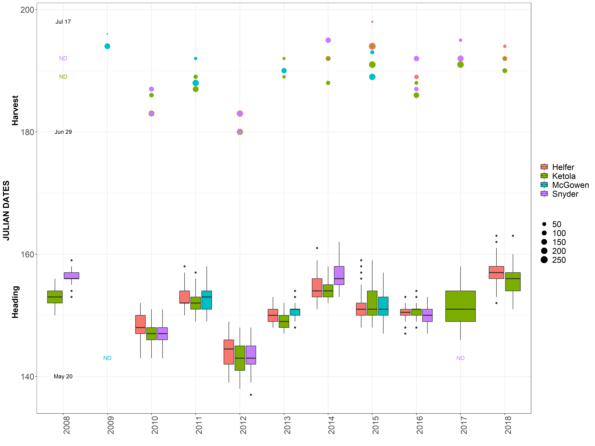
Data separated and graphed with different facets.
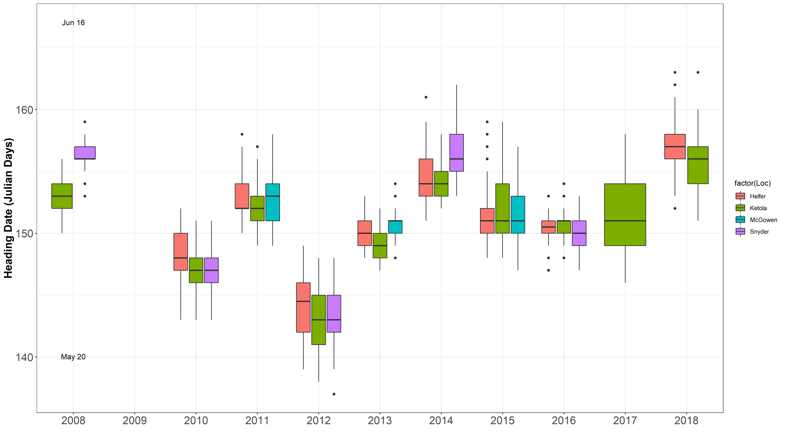
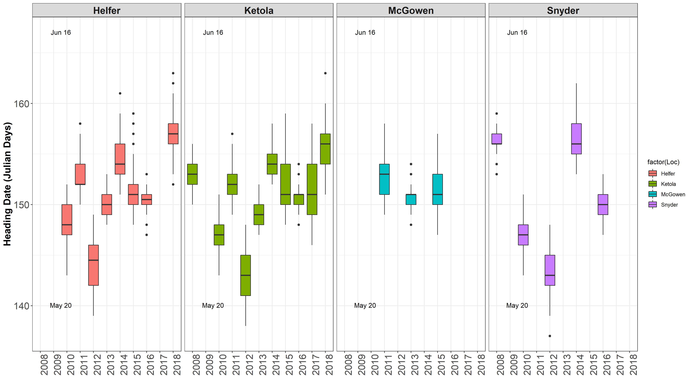
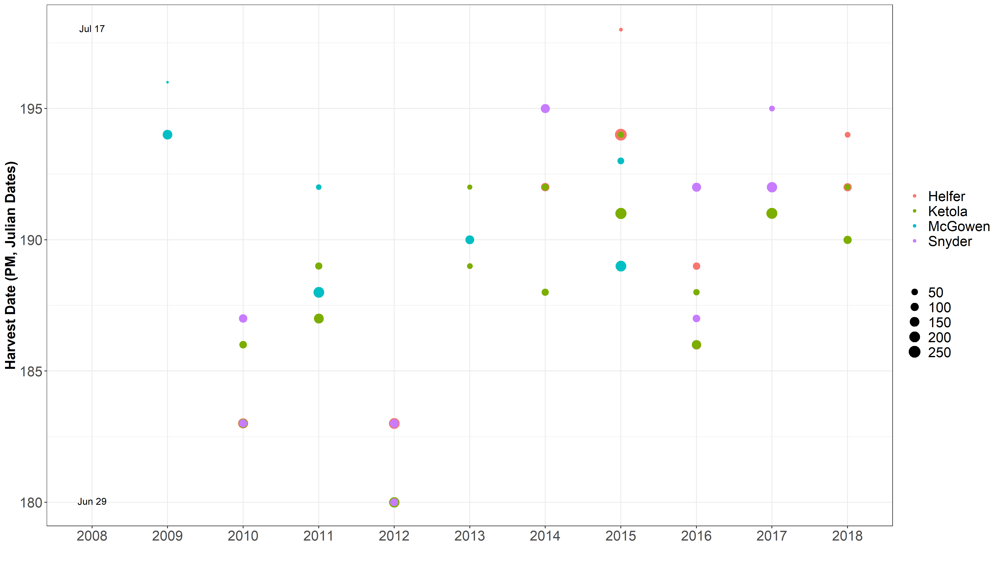
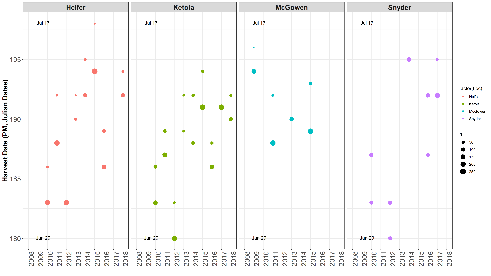
It is obvious 2012 was a different year. James mentioned there was an early heat wave that hit early in development, so development sped up. Also, in 2016 was a very rough drought year. Even though HD and harvest date is taken into account for the mixed model, but it is not taken into account in the raw mean analysis.
One location often is harvested over 2 seperate harvest dates, typically 4 days apart.
PHS GS v2 ¶
CURRENT R SCRIPT: PHS GS V10.R
Review PHS GS v1 for initial decisions on bandwidth parameters and models used
IMPORTANT NOTE: [ANALYSIS/VERSION 1](#PHS_GSM1) HAD THE GENETIC MATRIX (myGD) AND THE PHENOTYPIC MATRIX (myY) NOT IN THE SAME ORDER!
The error in analysis v1 does not effect the BLUPS calculated across all environments. So the PA below are still accurate.
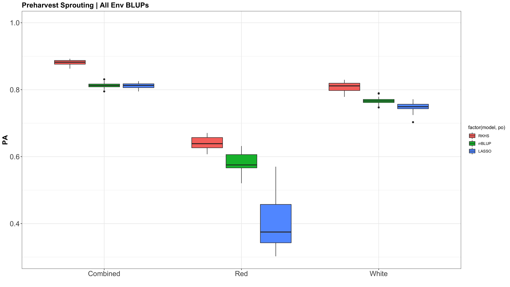
A comparison of the three models across each individual environment separately.
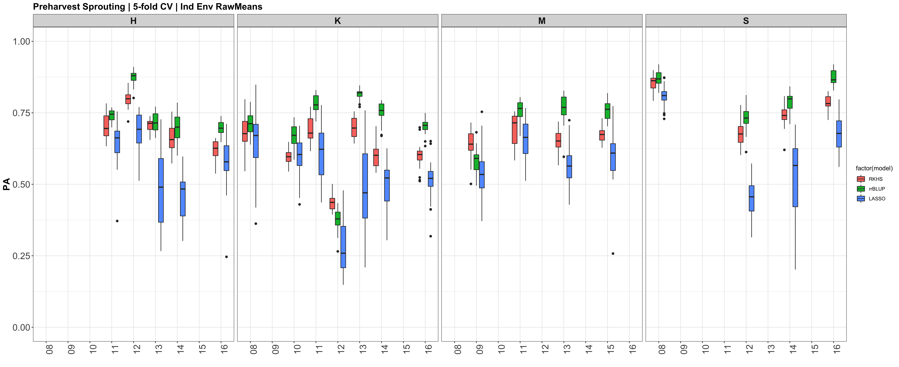
Below are the PAs for all three models plotted separately.
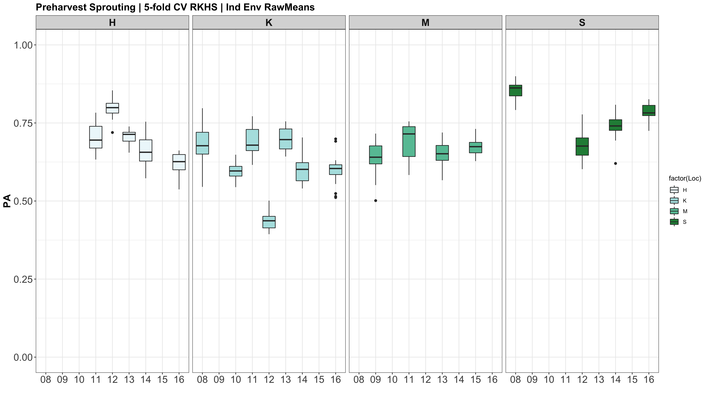
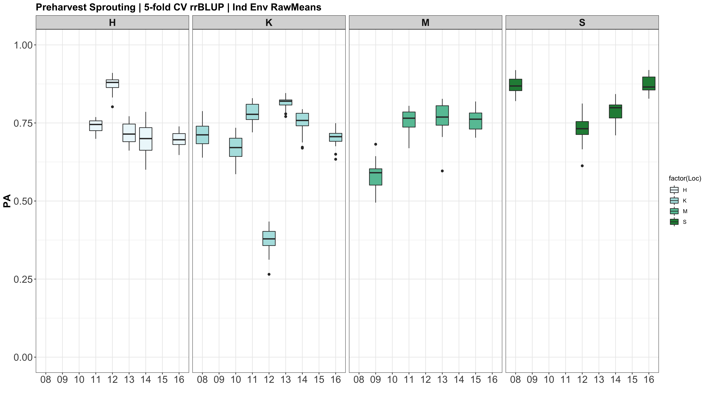
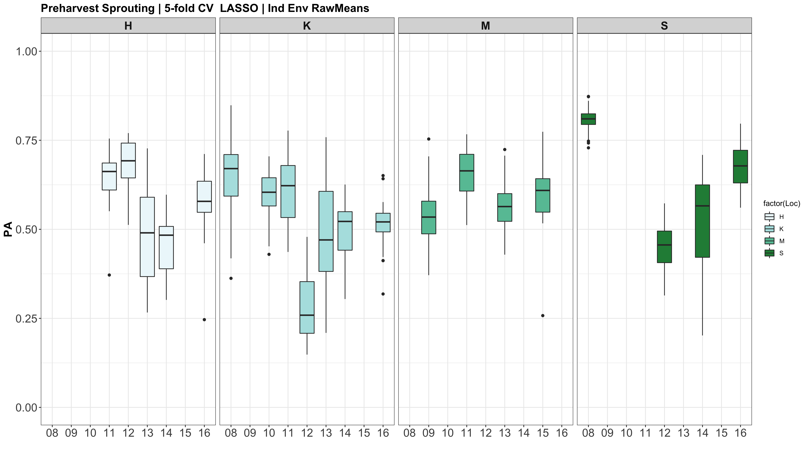
However, the PAs are likely low because the models were calculated using just te RawMeans of the 5 technical PHS reps (5 spikes). Now that I know the analysis works, I need to move forward with using a mixed model estimate from the 5 technical replicates while taking HD and scoring date as a covariate.
PHS Genomic Selection V1 ¶
I know I do not fully understand the models I am using and the background to the tutorials of the script I am running, however, I am reading as I go. So this first version will be a stumble through basic analyses, with no real in depth understanding. As the version change, there will be more meaning behind the models chosen, etc.
Model descriptions came from Desta and Ortiz, 2014 doi:10.1016/j.tplants.2014.05.006
For all of the models, I need to import and define my Y and X
myYW <- read.table("D:/PHS Genomic Selection Project/Data Analysis/GWAS/20181120_PHS_gwas/myYW_BLUP.txt", head = T,na.string=c(""," ","NA","na","NaN"))
names(myYW) <- c("gid", "PHS_BLUP_White")
myGDW <- read.table("D:/PHS Genomic Selection Project/Data Analysis/GWAS/20181120_PHS_gwas/myGDW_BLUPS.txt", head = T)
y = myYW[,2] #define my phenotype
X = myGDW; #define my genotype
gBLUP
Assumes that all markers have equal variances with small but non-zero effect; Computed from a realized-relation matrix (K=A.mat(M)) based on markers (M).
Package: rrBLUP
Model:
ans <- mixed.solve(y[,2],K=A.mat(M))
cor(y[,2],ans$u) #PA
PA: white = 0.815 red = 0.634
This is with all 11605 markers and all 792 and 278 white and red samples, respectively.
This tells me that the model breeding values (ans$u) $ predict the phenotype (y) at an accuracy of 81.5\% and 63.4\% of the time for white and red kernel lines.
But isnt what I want to do, is obtain the breeding values from one 'trainig' subset, and use those breeding values to predict the Y in another 'validation' set ran in another environment or something. And that is the accuracy I want to compare with all the models I run?
LASSO
Combines both shrinkage (like rrBLUP) and variable selection methods.
Package: BGLR
Model:
nIter = 1200
ETA<-list(list(X=X,model='BL'))
fm1<-BGLR(y, response_type = "gaussian", ETA = ETA, nIter=nIter, burnIn=2000,saveAt='LASSO_white_')
accuracy <- cor(y,fm1$yHat)
PA: white = 0.695 red = 0.605
RKHS
Based on genetic distance and a kernel function with a smoothing parameter to regulate the distribution of QTL effects. Effective for detecting nonadditive gene effects.
Package: BLR
Model:
n<-nrow(X); p<-ncol(X)
X<-scale(X,center=TRUE,scale=TRUE)
D<-(as.matrix(dist(X,method='euclidean'))^2)/p
h<-0.5
K<-exp(-h*D)
nIter = 1200
ETA<-list(list(K=K,model='RKHS'))
fm<-BGLR(y=y,ETA=ETA,nIter=nIter, burnIn=2000,saveAt='RKHS_wtrain_')
PA: white = 0.924 red = 0.806
Random forest
Uses the regression model rooted in bootstrapping sample observations. Takes the average of all tree nodes to find the best prediction model.Captures the interactions between markers.
Package:
Model:
PA:
| Model | 100% PA | . | 5-fold PA | . |
|---|---|---|---|---|
| kernel Color | white | red | white | red |
| gBLUP | 0.815 | 0.605 | . | . |
| LASSO | 0.695 | 0.605 | . | . |
| RKHS | 0.924 | 0.806 | . | . |
Conducting 5-fold Cross-Validations¶
library(doMC) # Used for running the loops on multiple cores on the SmallGrains Mac
registerDoMC(cores=5)
#yNA[tst] is the training dataset #yNA[-tst] is the testing dataset
setwd("/Users/shantel/Desktop/20181217 GS Mac")
y = myY[,2] #define my phenotype
X = myGD; #define my genotype
n<-nrow(X); p<-ncol(X)
folds=5
run=5
nIter = 12000
h<-0.5 #h is the bandwidth parameter. NOT heritibility
test_CV_parallel<-function(x,folds){
set.seed(x)
results=c()
D<-(as.matrix(dist(X,method='euclidean'))^2)/p
U<-exp(-h*D)
for(i in 1:folds){ #Train = 4/5 population; 80% of the lines
tst <- sample(rep(1:folds,length.out=n))
yNA<-y
yNA[which(i==tst)]<-NA
ETA<-list(list(K=U,model='RKHS'))
fm<-BGLR(y=yNA,ETA=ETA,nIter=nIter, burnIn=2000)
yHat_1=fm$yHat[-tst] #$ #fm column yHAT[-tst]
results <- append(results,cor(yHat_1,y[-tst]))
}
return(results)
}
phs_cv_results5=foreach(cores=1:5, .combine='c') %dopar% test_CV_parallel(x=cores, folds=5)
accuracy = as.data.frame(matrix(phs_cv_results5))
CURRENT R SCRIPT: PHS GS V10.R
As you can see, the phenotypes (y) is broken up, but the markers (X) are not, but both are used in the model. Do I need to also subset the marker (X) dataframe? After talking to Dan, he explained how we dont subset X, because we need that marker data of the test dataset to determine relationships between the training set and the testing set. If we didnt have that in the model, we wouldnt get estimated GEBVs for the test dataset, and nothing to check correlations too for prediction accuracies.
The prediction accuracies of the white kernel dataset appear very high, at least in this analysis.
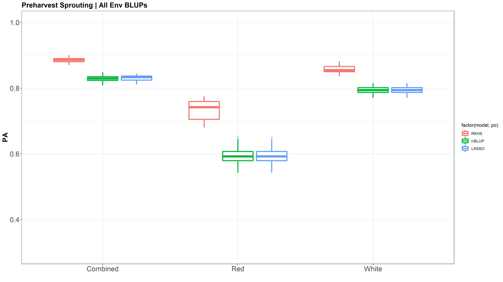
Figure: Prediction accuracy of different genomic selection models: Bayesian LASSO, RKHS, and gBLUP. 5-fold cross validation was conducted for each model 5 times (total of 25 estimates per model). Prediction accuracies (PA) were calculated using the GEBVs of the test dataset (GEBVtest) against the expected BV (EBVtest), in our case, the PHS score BLUPs.
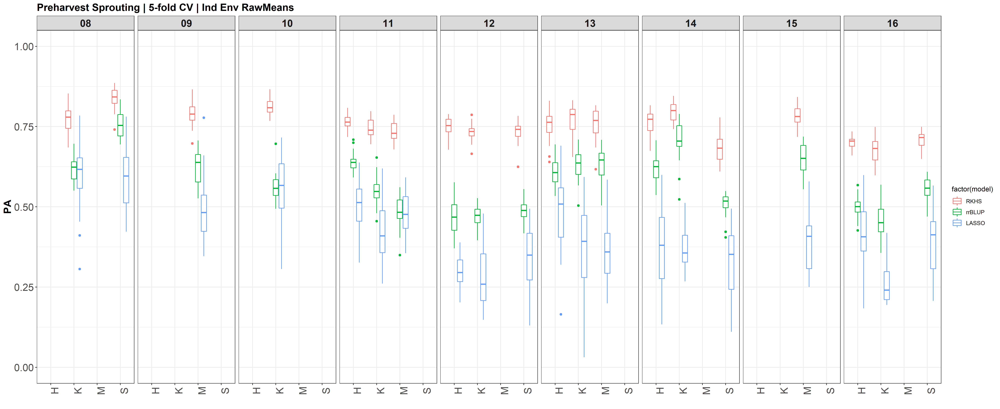
I changed the X (X=myGD) to occur within each 'foreach()' loop rather than just stating it up above, outside of the loop. It really changed the Red KC LASSO estimates. 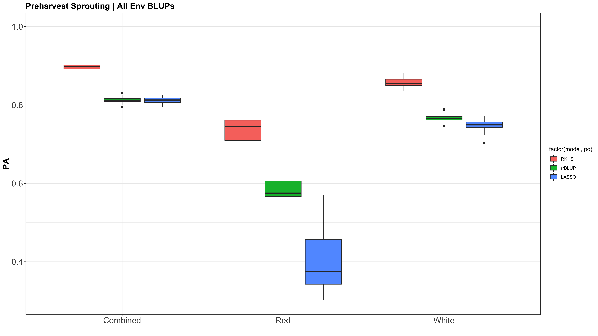
Bandwidth Parameter in RKHS ¶
Header: Determining bandwidth parameter for RKHS
For RKHS, h is bandwidth parameter. NOT heritibility. RERUN using an estimated h=0.5 for each combined, red, and white KC datasets. I need to determine what is the optimal bandwidth parameter to use for each dataset. Campos et al., 2010 shouls shed some light on how to select the h.
## Determining bandwidth parameter for RKHS -----------------------------------------------
h=c(.01,.1,.4,.8,1.5,3,5)
setwd("D:/PHS Genomic Selection Project/Data Analysis/GS/20181218")
# setwd("/Users/shantel/Desktop/20181218 GS Mac")
folds=5
run=5
nIter = 12000
#Combined ~~~~~~~~~~~~~~~~~~~~~~~~~~~~~~~~~~~~~~~~~~~~~~~~~~~~~~~~~~~~~~~~~~~~~~
PMSE<-numeric() ; VARE<-numeric(); VARU<-numeric() ;
pD<-numeric(); DIC<-numeric()
fmList<-list()
myY = myYc; myGD = myGDc
y = myY[,2]
X = myGD; n<-nrow(X); p<-ncol(X)
D<-(as.matrix(dist(X,method='euclidean'))^2)/p
for(i in 1:length(h)){
K<-exp(-h[i]*D)
ETA<-list(list(K=K,model='RKHS'))
prefix<- paste(h[i], "_",sep="")
fm<-BGLR(y=yNA,ETA=ETA,
nIter=5000,burnIn=1000,saveAt=prefix)
fmList[[i]]<-fm
PMSE[i]<-mean((y[tst]-fm$yHat[tst])^2)
VARE[i]<-fm$varE
VARU[i]<-fm$ETA[[1]]$varU
DIC[i]<-fm$fit$DIC
pD[i]<-fm$fit$pD
}
R2<-1-PMSE/mean((y[tst]-mean(y[-tst]))^2)
plot(VARE~h,xlab="Bandwidth",
ylab="Residual Variance",type="o",col=4)
plot(I(VARE/VARU)~h,xlab="Bandwidth",
ylab="variance ratio (noise/signal)",type="o",col=4)
plot(pD~h,xlab="Bandwidth", ylab="pD",type="o",col=2)
plot(DIC~h,xlab="Bandwidth", ylab="DIC",type="o",col=2)
plot(R2~h,xlab="Bandwidth", ylab="R-squared",type="o",col=2)
plot(PMSE~h,xlab="Bandwidth", ylab="PMSE",type="o",col=2)REPEAT FOR RED AND WHITE KC DATASETS
Based on Campos et al., 2010, "As shown in Fig. 4, the value of the bandwidth parameter that gave the best predictive ability was in the range (2,4), except for environment E2 in which values of h near one performed slightly better." where figure 4 is the Estimated MSE (mean-squared error) between CV predictions (yHat) and observations (y) versus values of the bandwidth parameter, h, from 0.1 - 10. The bandwidth parameter with the lowest MSE gave the best predictive ability.
So as we look the thePMSEplot againsth, we should select the bandwidth parameterhthat gives the lowest MSE for a) Combined, b) White, and c) Red kernel color datasets. Then apply thathto all environments and individual environments.
Also, I just found another article discussing selection of the bandwidth parameter Pérez-Elizalde et al., 2015. Need to review, but for now, I think we have a good start for h.
| parameter | Combined | White | Red |
|---|---|---|---|
| residual var | 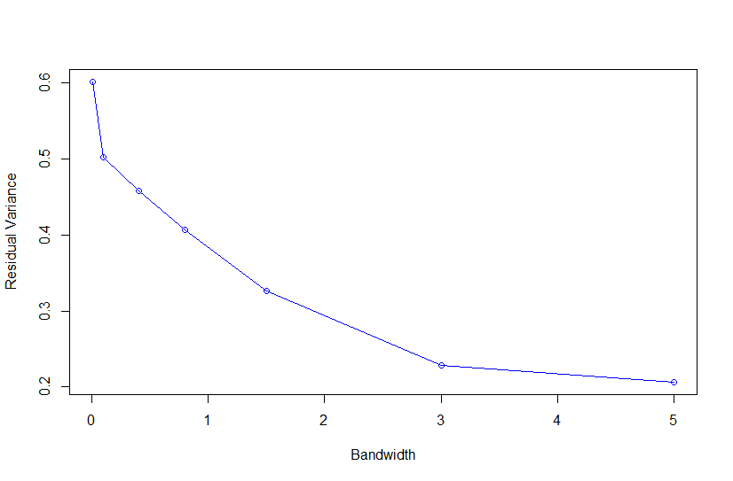 | 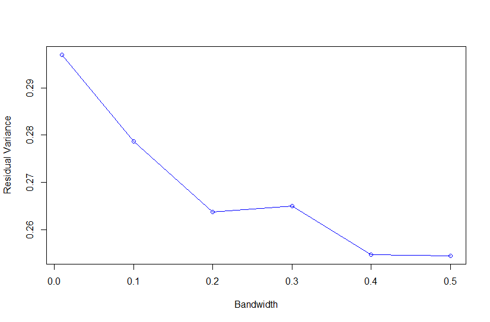 | 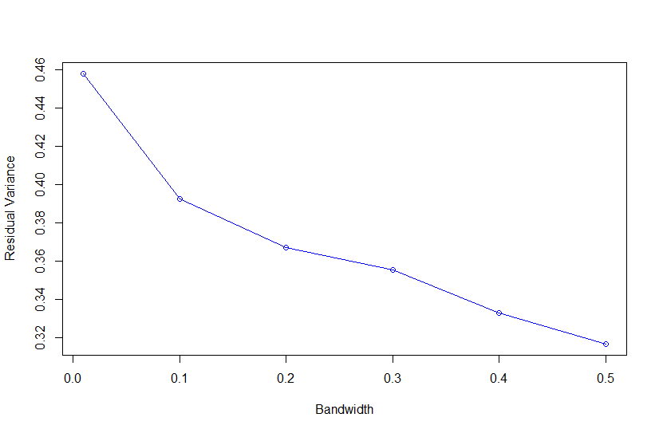 |
| r2 | 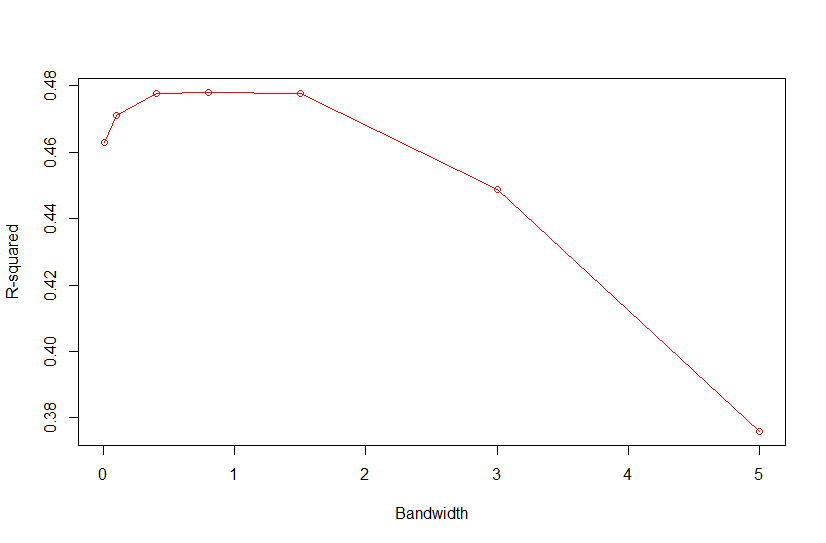 |  |
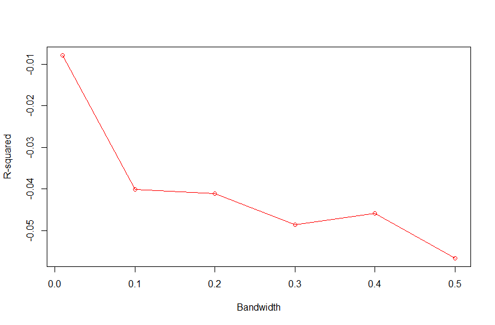 |
| selected h | 0.4 | 0.3 | 0.3 |
with R2<-1-PMSE/mean((y[tst]-mean(y[-tst]))^2) and PMSE is PMSE[i]<-mean((y[tst]-fm$yHat[tst])^2)
Header: Compare RKHS with and without X scaling
The big difference in RKHS, is the genetic matrix. The code I am using, I use a distance matrix calculated from X=myGD, but AFTER X is scaled to the center X<-scale(X,center=TRUE,scale=TRUE). What does RKHS look like if I do not scale X. This all had to do with computing the genomic relationship matrix. I need to read more on what the model is doing, and the parameters I need in my model.
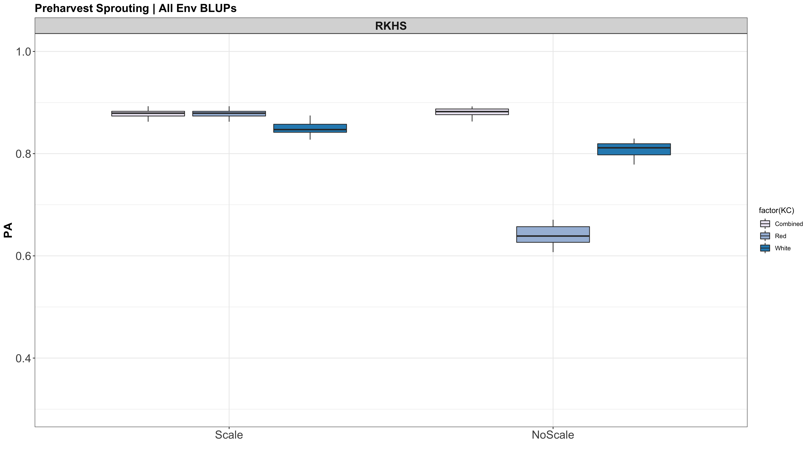
I dont think that the code to scale X should be used. I am reading more on RKHS and BGLR, and it is not used. I likely copied over the tutorial code from the CIMMYT tutorial and they probably imputed X using the scale function for some demonstrative reason, but it is not needed in the actual BGLR model calculation. This still doesnt explain why rrBLUP and LASSO look exactly the same. in the document BGLR_extdoc it goes over the calculation of the kernel and states: "In the example genotypes were centered and standardized, but this is not strictly needed."
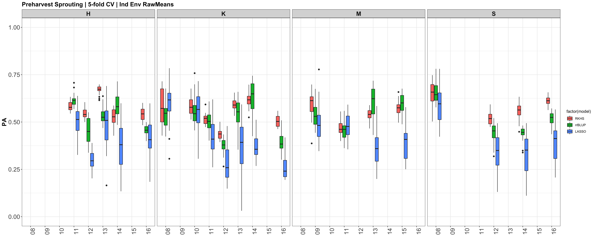

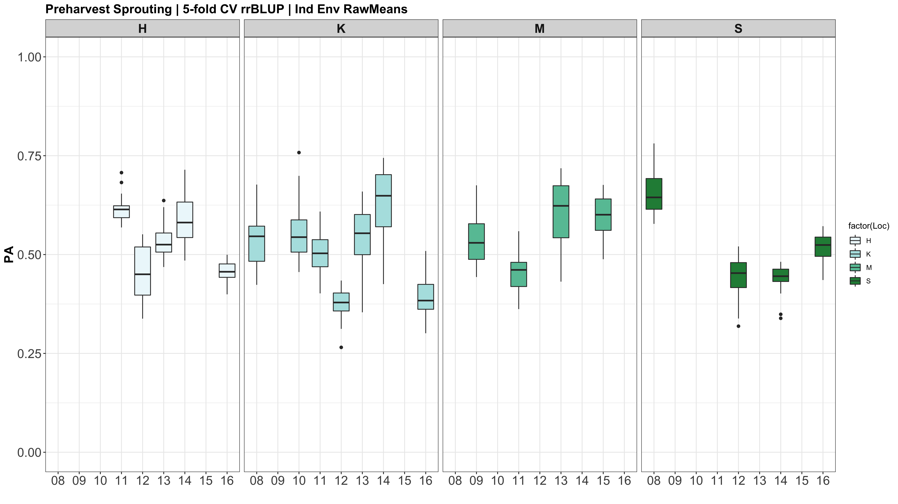

CURRENT R SCRIPT: PHS GS V10.R
IMPORTANT NOTE: I REALIZED THAT THE GENETIC MATRIX (myGD) AND THE PHENOTYPIC MATRI (myY) WERE NOT IN THE SAME ORDER FOR THE INDIV ENV! myGD ORDERS BY CHARACTER AND myY WAS ORDERED BY NUMERIC VALUE. SO I WILL NOW FIX THE DATAFRAMES TO ALIGN, AND MOVE ONTO V2 OF THE GS ANALYSIS.
This was not the case for the datasets across all environments, just the indiv env analyses.
Genomic Selection Notes¶
What other publications or dissertation chapters used the Cornell Master wheat program for GS?
Sr Cornell Wheat | Rutkoski J, Singh RP, Huerta-Espino J, Bhavani S, Poland J, Jannink JL et al (2015a) Genetic gain from phenotypic and genomic selection for quantitative resistance to stem rust of wheat. Plant Genome 8(2):1–10 Rutkoski et al. (2013) found that the amount of missing data commonly observed in wheat GBS datasets has very little impact on GS prediction accuracies.
GWAS & DATA EXPLORATION¶
TABLE OF CONTENTS:
Preharvest Sprouting
Genomic Prediction
GWAS & Data Exploration
PHS data exploration v1 v2
PHS Mean Analysis v1 v2
PHS GWAS Model Comparison Preliminary Results Version 2
Heading Date and PM Harvest Date Analysis and Summary
PHS GWAS update¶
The 2B QTL appears to not be found in the red kernel dataset. I need to check if it shows up across years combined. Is the tolerant allele, or all susceptible? Which came from red/white cross? And there are a ton of Cayuga crosses in the master, so if James Tanaka crossed to a red, we might see something.
I started to wonder what the marker density per chromosome is to get a sense of whether it is likely one of our QTL hit a published gene region or not. Note, this is all speculative, and until I test the gene markers on our CNL panel, we can not say for sure if a QTL is caused by a published gene.
Nicholas' Genetics paper has our GBS data (30% Missing filter, not the 50%) for the CNL master published for density and also how far GBS markers are to published v1.0 annotated genes. .
Santantonio et al., 2019 doi: 10.1534/genetics.118.301851


Fortunately for the 2B mapping project, it looks like the GBS markers are pretty dense which may help with fine mapping.
Unfortunately, the 4A chromosome appears to have some issues with the short arms density. The TaMKK3-A published dormancy gene is located on the long arm, and may not be effected by the lack of markers in that region to map with, but it could be. Currently my GWAS hits on 4A are about 60Mbp away. I am unsure if that is close or far away for marker density.
Would there not be a closer marker for a QTL hit? This is the question I need to ask towards all of my gene to QTL that appear to be in proximity.
PHS GWAS Analysis V2 ¶
GWAS R Script | GWAS Model Folders
Addressing PC make-up:
Based on the GAPIT GLM PCA output, it looks like each dataset has 4 PC explaining about 26%, 28%, and 44% of the variation in the genotypic data of the white, red, and combined data resectively. White PCA Red PCA Combined PCA
So I re-ran the GWAS Analysis using rrBLUP with 4 PC's as a covariate.
| PC used | White | Red | Combined |
|---|---|---|---|
| n.PC=0 |  |
 |
 |
| n.PC=4 |  |
 |
 |
You can see that the white KC dataset shows a more significant region on Chrm 6B, however the red and combined datasets do not appear to have many QTN effected. Eitherway, it doesnt visually look like we are losing any potentially sig QTN by adding in the 4 PC as a covariate.
I still need to understand what biological factors contribute to those PC's. Nick as looked at the master dataset before, it would be a good start to see if he addressed PCA in his dissertation.
I did find a paper published Isidro et al., 2015, that contained the Cornell breeding program over 2007-2012. They used the 4 subpopulations as a part of the clustering model.
| . | . |
|---|---|
| 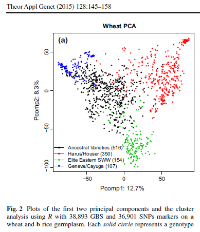 | 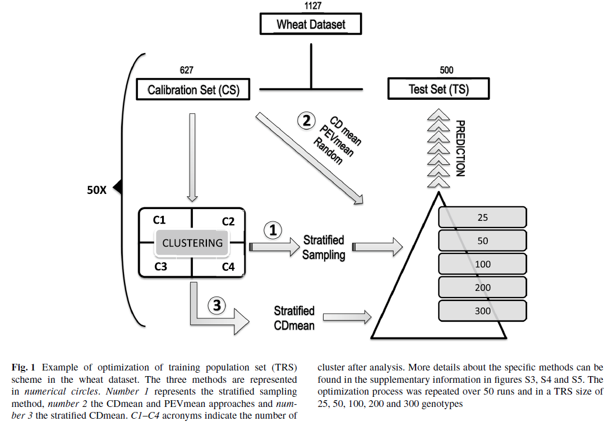 |
I will start compiling these pedigree subsets into my 1,447 breeding lines and see if that helps explain the sections of the PCA plots.
| Color | PC1 x PC2 | PC2 x PC3 | PC1 x PC3 |
|---|---|---|---|
| White | |||
| Red | |||
| Combined |
PHS GWAS Preliminary Analysis ¶
| myGM | 11604 obs. of 4 variables | ||
|---|---|---|---|
| rs | c hrom | pos | |
| S1A_PART1_1197644 | 1A | 1197644 |
| myYR | 290 obs. of 2 variables |
|---|---|
| X | X.Intercept. |
| 1059 | -0.27071440 |
| myGDR | 290 obs. of 11605 variables | |
|---|---|---|
| X | S1A_PART1_1197644 | S1A_PART1_1238021 |
| 1059 | 0 | 0 |
| myYW | 846 obs. of 2 variables |
|---|---|
| X | X.Intercept. |
| 1 | - 0.29209690 |
| myGDW | 846 obs. of 11605 variables | |
|---|---|---|
| X | S1A_PART1_1197644 | S1A_PART1_1238021 |
| 1 | 0 | 0 |
It appears that red kernel datasets do not have any significant QTN across any of the GWAS models. This could be because I have to run more models to fit the dataset better, or it could mean that the R red genes are the only genes providing tolerance and susceptibility in the red kernel lines. The question I should answer is: would I see the R genes show up in a red-kernel only dataset? They would stil be differing in the number of R genes a line would have that could effect dormancy/PHS tolerance. But would that be strong enough to see in a GWAS? Also, if I run the red and white kernel datasets together, would I immediately see QTN on chrm
The different model outputs are found in D:\PHS Genomic Selection Project\Data Analysis\GWAS\20181114_PHS_gwas and also found here.
I was able to run a GWAS using:
| Package | Model | Parameters |
|---|---|---|
| GAPIT | GLM | GAPIT(Y=myYW[,c(1,2)],GD=myGDW,GM=myGM,PCA.total=8,group.from=1,group.to=1,group.by=10,memo="GLM",Major.allele.zero=TRUE) |
| GAPIT | MLM | GAPIT(Y=myYW[,c(1,2)],GD=myGDW,GM=myGM,PCA.total=2,group.from=846,group.to=846,group.by=10,memo="MLM",Major.allele.zero=TRUE) |
| GAPIT | CMLM | GAPIT(Y=myYW[,c(1,2)],GD=myGDW,GM=myGM,PCA.total=2,group.from=1,group.to=846,group.by=10,memo="CMLM",Major.allele.zero=TRUE) |
| rrBLUP | MM | GWAS(pheno, geno, fixed=NULL, K=NULL, n.PC=0, min.MAF=0.05, n.core=1, P3D=TRUE, plot=TRUE) |
The QQ Plot for rrBLUP looks the best (white kernel data only).
| GLM | MLM | CMLM | rrBLUP |
|---|---|---|---|
| 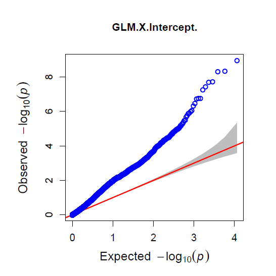 | 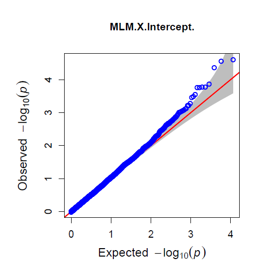 |  |
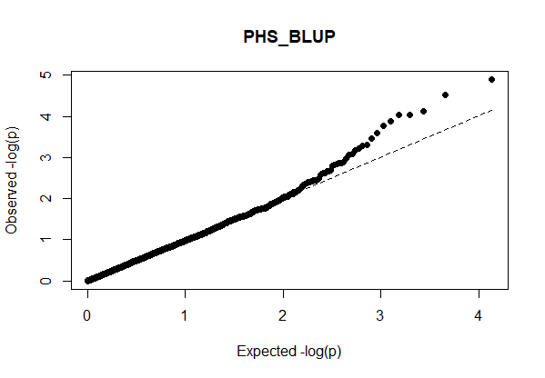 |
I can not get FarmCPU or BLINK code to work. Since they both run the same algorithms, I think that there is an error in my myY, myGD, or myGM. For now, I am just moving forward with the other packages, but I need to return to this problem and fix it.
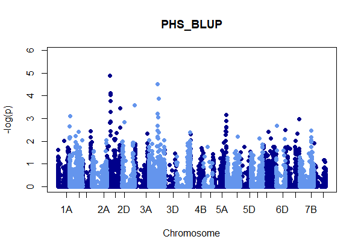
Figure: Manhatten plot ofwhite kernel color dataset only. The 5% bonferroni threshold for 11604 markers is a -log(p) = 4.309 or higher.
Even though rrBLUP appears to be the best fit model, there were no marker above the q-values less than 0.05.
rrBLUP manual: "The dashed line in the Manhattan plots corresponds to an FDR rate of 0.05 and is calculated using the qvalue package (Storey and Tibshirani 2003). The p-value corresponding to a q-value of 0.05 is determined by interpolation. When there are no q-values less than 0.05, the dashed line is omitted."
This could be due to the fact I combined all of the evironments into one BLUP value, and that is what is analyzed here. Next, I will use rrBLUP to perform GWAS on all 29 environments and identify significant QTN individually.
GWAS ANALYSIS ¶
Based on the results from the model comparisons, rrBLUP was the best fit model to run a GWAS with the data. (Unsure about FarmCPU since I havent gotten the code working yet)
Helfer 2015 : has QTN on 3B that is significant (q-values < 0.05). -log10(p) = 6.68 Pos: 508,711,126bp
Snyder 2008: Sig QTN -log10(p) =4.65 Pos: 572,010,355bp
Ketola 2008, McGowen 2009: Sig QTN -log10(p) = 4.3 Pos: 494,862,155 bp
 Figure: Manhatten plot of markers with > 3.0 -log(p). Locations are indicated by color, years are indicated by symbol. There are 28 different environments. The 5% bonferroni threshold for 11604 markers is a -log(p) = 4.309 or higher.
Figure: Manhatten plot of markers with > 3.0 -log(p). Locations are indicated by color, years are indicated by symbol. There are 28 different environments. The 5% bonferroni threshold for 11604 markers is a -log(p) = 4.309 or higher.
 Figure: Manhatten plot of red and white kernel color datasets combined. The 5% bonferroni threshold for 11604 markers is a -log(p) = 4.309 or higher.
Figure: Manhatten plot of red and white kernel color datasets combined. The 5% bonferroni threshold for 11604 markers is a -log(p) = 4.309 or higher.
Summarized this analysis at lab meeting on 2018.11.19:
| Preview and Download File | Feedback |
|---|---|
| 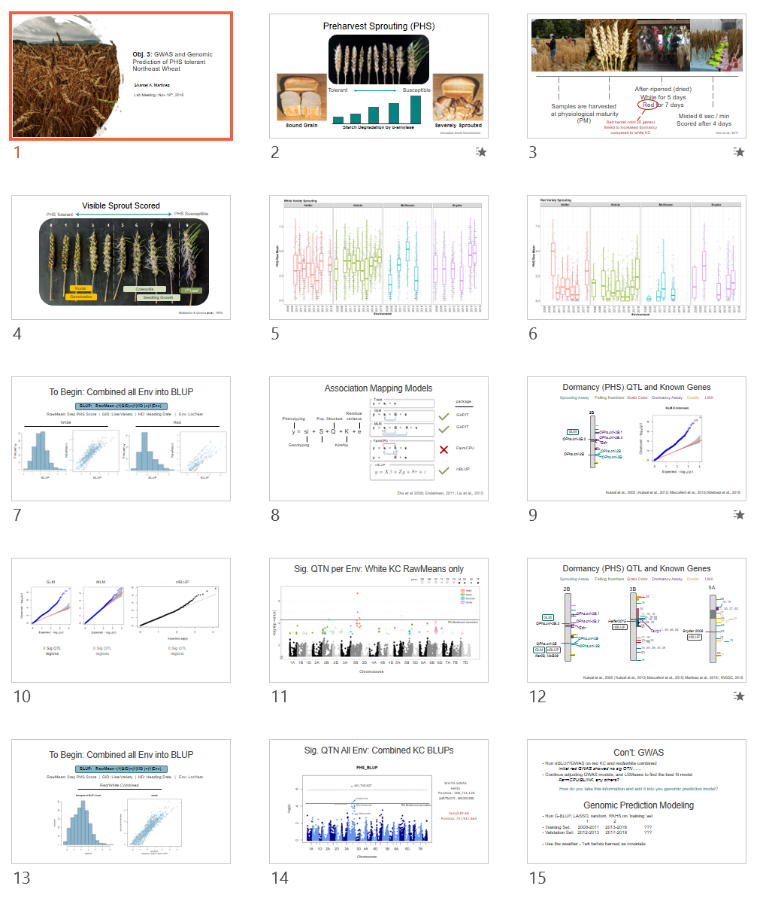 | 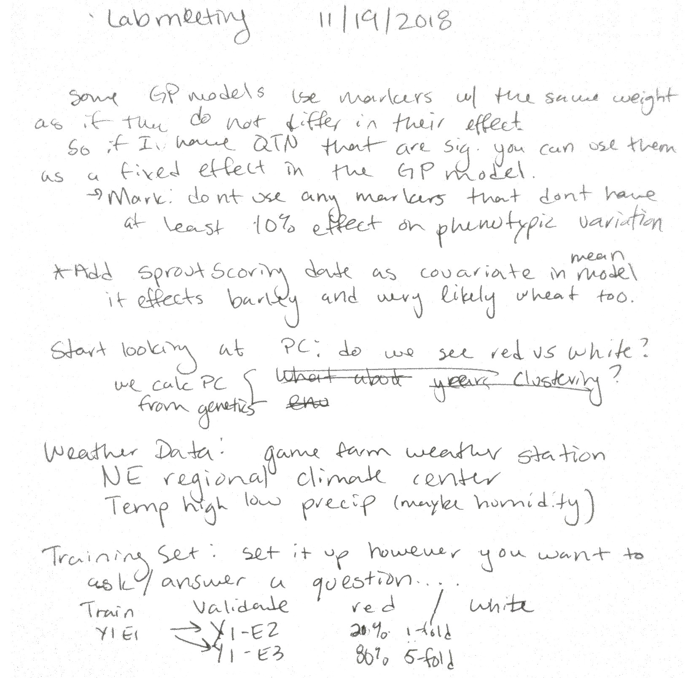 |
PHS Data Exploration v2 ¶
The initial data exploration that included most of the data is here and the R script is here. This version, I needed to add in the 2012, 2016, 2017, and 2018 data to be formated.
| Year | Helfer | - | Ketola | - | McGowen | - | Synder | - |
|---|---|---|---|---|---|---|---|---|
| - | Plots | GID_u | Plots | GID_u | Plots | GID_u | Plots | GID_u |
| 2008 | - | - | ?460 | ? | - | ? | ?460 | ? |
| 2009 | - | - | ?460 | ? | ?460 | ? | - | - |
| 2010 | 320 | 145 | 323 | ? | - | - | 322 | ? |
| 2011 | 336 | 190 | 336 | ? | 336 | ? | - | - |
| 2012 | 318 | 180 | 318 | 294 | - | - | 318 | 294 |
| 2013 | 130 | ? | 130 | ? | 371 | ? | - | - |
| 2014 | 238 | ? | 238 | ? | - | - | 238 | ? |
| 2015 | 480 | ? | 480 | ? | 480 | ? | - | - |
| 2016 | 440 | ? | 440 | ? | - | - | 440 | ? |
| 2017 | - | - | 374 | ? | - | - | 374 | ? |
| 2018 | 256 | ? | 305 | ? | - | ? | - | ? |
| Combined | 2,386 | 1,116 | 3,162 | 1,304 | 1,552 | 1,050 | 2,048 | 1,149 |
SNyder 2017, a lot of missing Yield data? What happened.
2018: these lines were labeled with the same GID but not the same name
274 NY12365-1-21-09
274 Hopkins
274 Hopkins
274 Hopkins
274 Hokins
280 NY12369-1-25-07
280 12028-1-1-7
281 NY12369-1-25-14
281 12028-1-1-8
288 Pioneer 25W36-288
288 12030-1-1-3
290 12030-1-1-5
290 Ava
306 NY12396-1-3-09
306 12031-1-1-10
307 NY12396-1-3-13
307 12031-1-1-11
349 NY12457-1-8-11
349 12045-1-1-8
407 NY8080
407 Augusta
Ketola 2009 still need to be added 2008 - 2018 | 29 Environments
Each table needs 26 variables/headers: GID, Entry, Plot, PHSall, Sprout1, Sprout2, Sprout3, Sprout4, Sprout5, RawMean, Harvest, Mist, Score, Comments, PlotYield, TW,Moisture, Lodging, Ht, HD, WH, KC, Mildew, Year, Loc, Env, AR, daysMisted
Other columns from the field include: Yield (); Test Wt (); % moisture; Lodging; Ht (Height cm); HD (heading date; NOT julian date, day of the month number); Mildew (powdery mildew 0-9 scale, with 5 start see symptoms on flag leaf in 50% of the plot); WH (winter Hardiness, values are % alive, if empty 100%); Comments; AR (number of days between harvest and misting)
Heading Date will need to be a covariate in my analysis, so I need to include it in all of my datasheets. Unfortunately, the breeding program enters in just the day value of the month 50% of the plot headed. So I need to manually go into the original data files, determine if the HD was in May or June, then add that + the dady into a cell so that I can convert the day-mo value into julian dates later in R.
NY7088 is also line number NY88046-7088, which was later named Medina In old field books This line may be mistakenly written as NY7708 or just 7708 as a check.
PHS Means Analysis v2 ¶
2018.11.14
PHS Mean Analysis.v3.R
Like the first version of analysis, there was many red kernel lines that were misted after 5 or 8 days of ARing, rather than the expected 7 days of ARing. The 5 and 8 days AR lines were omitted:
library(plyr)
count(PHSred, "AR")
# AR freq
# 5 95 Omit
# 7 2142
# 8 267 Omit
# NA 214 Kept
Figure: Boxplots of Raw Means of white and red kernel samples from 2008-2018 at 4 locations(colored, facets).


Calculating LSMeans¶
| Model | h$^2$ Red | h$^2$ White | h$^2$ Combined |
|---|---|---|---|
| RawMean~GID | .278 | .293 | .460 |
| RawMean~GID+Env | .355 | .354 | .503 |
| RawMean~GID+Env+Env+HD | .353 | .345 | .498 |
| RawMean~GID+Env+HD+Score | .500 | .484 | .655 |
| RawMean~GID+Env+HD | .269 | .291 | .474 |
| RawMean~GID+Env+Env%in%GID | .355 | .354 | .503 |
| Model | h$^2$ Red | h$^2$ White | h$^2$ Combined |
|---|---|---|---|
| Sprout~GID | .278 | .293 | .460 |
| Sprout~GID+Env | .355 | .354 | .503 |
| Sprout~GID+Env+Env+HD | .353 | .345 | .498 |
| Sprout~GID+Env+HD+Score | .500 | .484 | .655 |
a. h$^2$ was calculated using (Vg) / ((Vg)+(Ve))
I chose to move forward with the model RawMean~(1|GID)+(1|Env)+(1|HD)+(1|Score) since I want HD always as a covariate, and the scoring date drastically improved the heritibility.
Figure: NEED TO UPDATE WITH NEW LSMEANS Histogram and correlation plots of BLUPS and LSMeans of white and red kernel samples across all 29 Environments combined.
| WHITE | RED |
|---|---|
 |
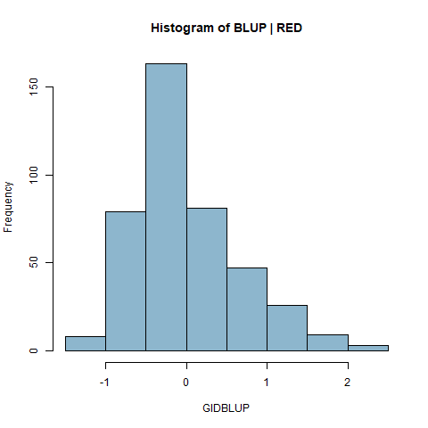 |
 |
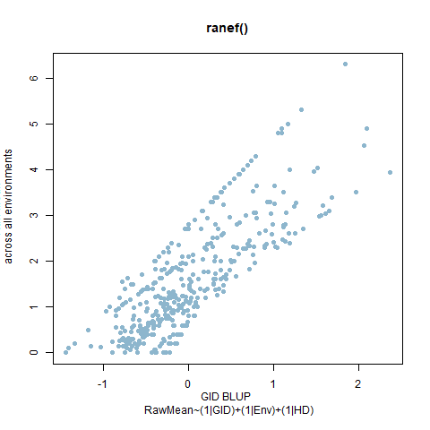 |
An initial GWAS was conducted no the BLUPs across all environments just to see if there was and sig QTN and to make sure my basic code worked.
PHS Data Mean analysis ¶
The PHS Mean Analysis R file generated the following graphs.
Note: In the red subset of the PHS data, there are both 7 days after-ripened (correct) and 5 days AR (incorrect). This could mean that my assumptions of those lines being red is incorrect, and they are actually white, OR there was an error during the spike-wetting test and the red lines were accidently misted after 5 days of ARing. There are 81 "red" lines that were misted after 5 days of ARing. For now, I omitted those data points.
| A | B |
|---|---|
| 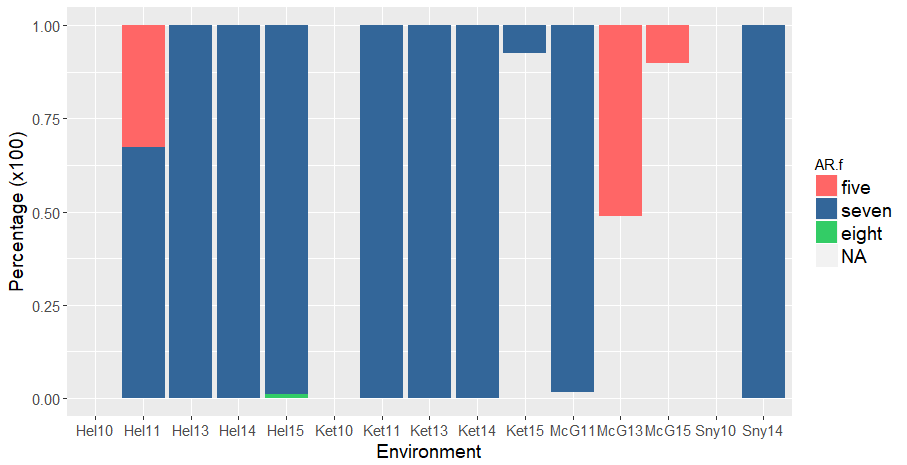 | 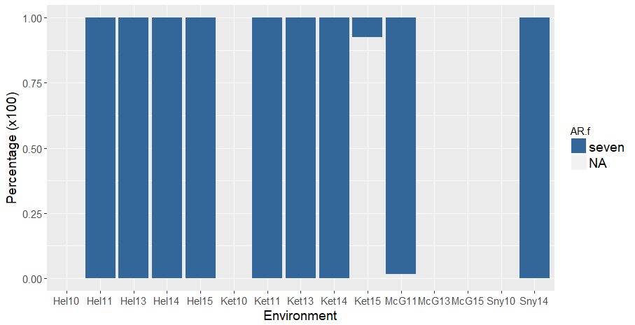 |
Figure 1. Percentage of red kernel color lines A) before and B) after keeping only seven (blue) days After-ripened samples and omitting five (salmon) and eight (green) day AR samples. Lines without data of days misted are in grey.
I think McGowen 2013 and 2015 may have been all tested after 5 days of misting, but since all the remaining datapoints are missing in terms of the days they were harvested and misted, I can not be sure. This also goes for the locations with NA data.
The omission of 5d AR didn change McGowen 2015 much, but the means of McGown 2013 and Helfer 2011 reduced drastically.
The distributions of the Raw PHS means (simple mean between the technical replicates) are shown
 Figure 2. Histogram of raw PHS score means of red kernel colored seeds after 7 days of AR and 4 days misted.
Figure 2. Histogram of raw PHS score means of red kernel colored seeds after 7 days of AR and 4 days misted.
Now, I just wanted a quick look at a simple linear model with random effects for Env and GID within Env
| A | B |
|---|---|
| 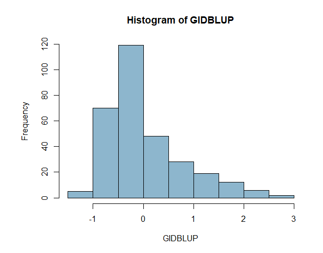 |  |
Figure 3. PHS Scores of red kernel colored lines after 7 days of after-ripening and 4 days of misting. A) Histogram of GID BLUPs. B) Comparison of Raw means of GID across all enviornments and the GID Blups created using the ranef() function and the linear model RawMean~(1|GID)+(1|Env)+(1|Env%in%GID).
| A | B |
|---|---|
 |
 |
Figure 4. PHS Scores of white kernel colored lines after 5 days of after-ripening and 4 days of misting. A) Histogram of GID BLUPs. B) Comparison of Raw means of GID across all enviornments and the GID Blups created using the ranef() function and the linear model RawMean~(1|GID)+(1|Env)+(1|Env%in%GID).
The /PHSGID_BLUPs.csv and /PHSwhiteGID_BLUPs.csv file included the GID name and the BLUP value. I can now use this to run a quick GWAS. First, I need to make sure my genotype file aligns correctly with the 309 red GIDs
PHS Data Exploration Notes | 2018.05.07 ¶
Initial look into the 2011, 2013, 2014, and 2015 PHS data from Helfer, Ketola, McGowen, and Snyder
R Code of the analysis is located D:\PHS Genomic Selection Project\Data Analysis\Means Analysis\ PHS Mean Analysis.v1.R


There are 732 unique -white- lines and 358 unique -red- lines with PHS Data
HORMONE PROFILING¶
TABLE OF CONTENTS:
Cayuga/Caledonia
Wet Lab Notebook : notes on lab experiments
Hormone Profiling
Peak Calling
Experiment Design Meeting
Cayuga Mapping
Hormone Project Update¶
Had an informal presentation and discussion with the Oliver Lab 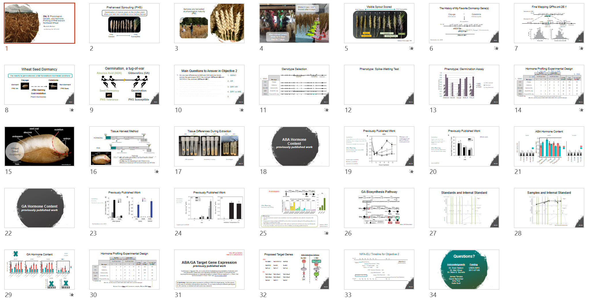
Feedback
| Pg1 | Pg2 | Pg3 |
|---|---|---|
| 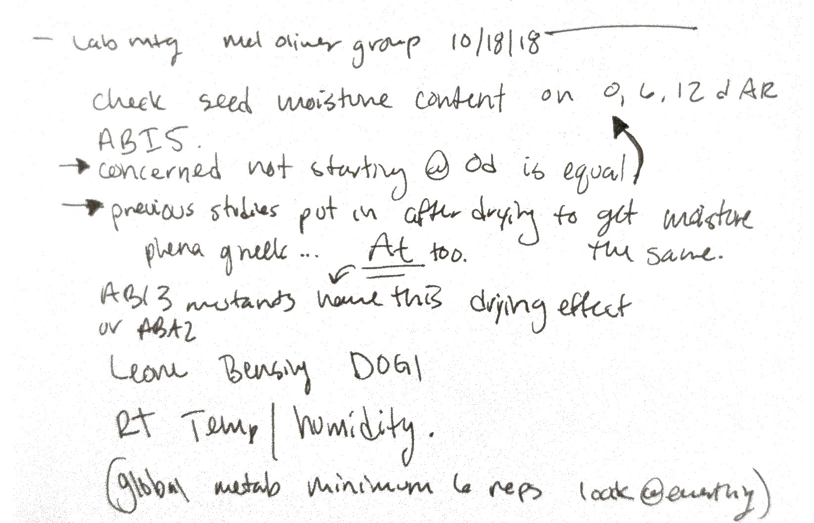 | 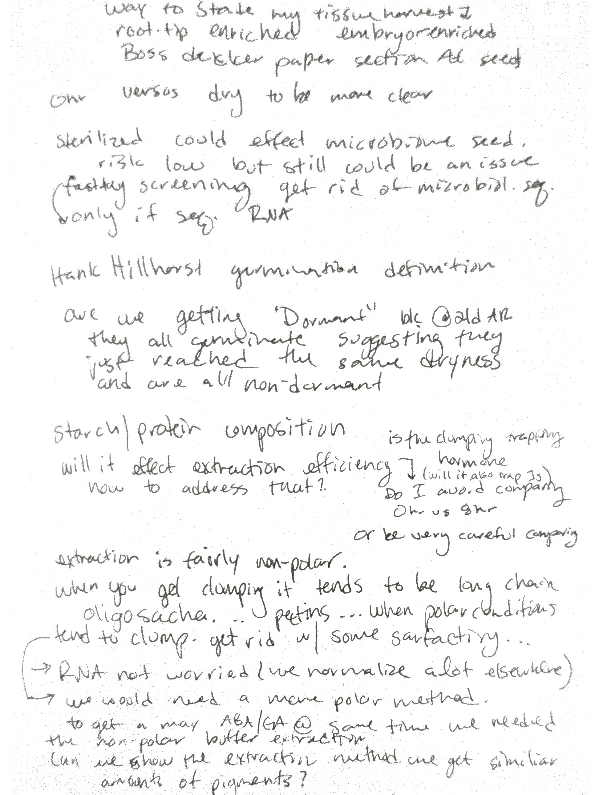 | 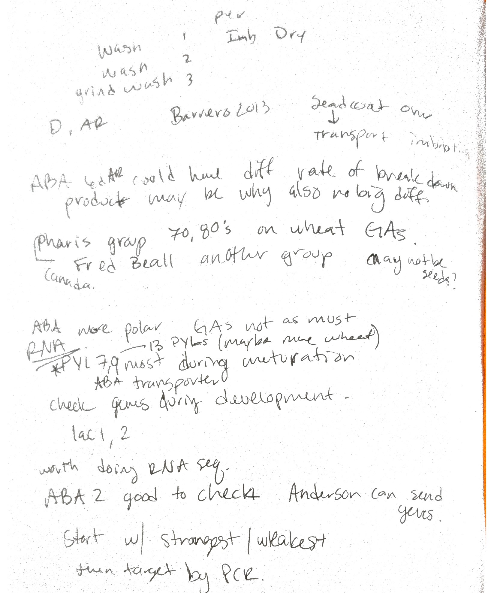 |
Hormone Project Data Analysis ¶
2018.10.23
Peak Calling Notes:
Deleted all of the autointegration calls.
Zoomed in until the signal axis ranges from 0 to about 2000. Zooming in less, would result in errors in adding straight lines along the bottom of the peaks. Zooming in further would be more exact, but I tried to remain consistent across all samples and tried not to get stuck in the details of continuously zooming in.
I can consistantly call GA1-IS, ABA-IS, GA20-IS, GA53-IS, GA12-IS, and GA12-ald-IS. It was rare that I could even see a clear peak of GA29-IS and GA8-IS. If the former 6 internal standards (IS) were not clear, I would make note and omit for downstream analysis. This could be due to poor extraction of that sample if the IS is not even call-able.
GA53-IS and GA53 would not have a level base, that meaning the start of the left side of the peak, would always be lower than the right side of the peak, consistently. Therefore, the base line created had a very slight angle. During peak calling of this hormone, keeping the angle as small as possible was attempted.
GA12 appeared to often have a double peak, the first part of the peak was always called and ended at the start of the second peak.
GA12-aldehyde-IS was always there, however I was unable to detect any endoenous GA-12 in the samples.
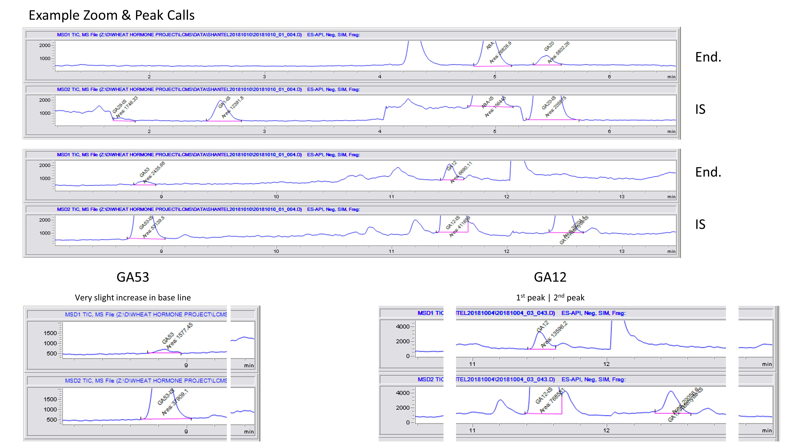
While looking at the MeCN washes in between samples, the very first wash (Wash 1) after many samples appears to have a a debris peak consistently around 13.5 min retention time. Then that debris peak is cleaned up by the previous wash and no longer seen in the consecutive wash(es) (Wash 2). Luckily, this debris is seen outside of any regions that we call hormone peaks, so I dont believe it is an issue between sample to sample contamination.
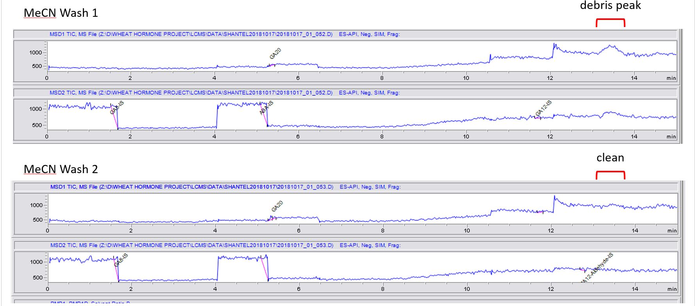
Hormone Project Meeting/Summary ¶
With Mark Sorrells | 2018.09.04
This Cayuga Wheat Hormone Experimental Design googlesheet has the tentative experimental designs. Optimizing the number of samples I can run while I'm at University of Missouri and knowing how many seeds I have at the 0 d AR time point, I think I can run 9 different lines instead of my original idea of 2 in the proposal. Notice though the caveat that I can not run dry seeds at 0d AR. No matter what scenario I pick or how many lines I compare, all I will be able to compare for the dry conditions is the 6 and 12 d AR time points and the lines.
Overall, this project will be mainly focused on comparing hormone levels and RNA expression of hormones/precursors of:
- Genotypes a) Cayuga, b) Caledonia, c) three BC1 lines with only the distal QTL, d) three BC1 lines with only the proximal QTL, and e) a BC1 line that is Caldonia-like in genotype and phenotype.
- After-ripening time points of 6d and 12d across all genotypes. 6 days has the large difference between Cayuga and Caledonia phenotype, and 12 days is when PHS tolerant Cayuga is losing more dormancy (so more near a comparison of both being after-ripened).
- Dry seeds versus imbibed seeds at both 6d and 12d AR.
- Early after-ripening stage 0d imbibed 6 and 12 hours will be a small bonus comparison.
Concerns: Thoughts on having 2 different embryo numbers for dry versus imbibed if we want to compare the two later? I would love the same number of embryos in the dry seed experiment the same number as the imbibed samples, to keep the experimental design balanced, but that seems like so much.
SNelson: My thought on having 2 different embryo numbers for dry vs imbibed and comparing them later? This is not a problem, it is best to do it this way. Even if you had unlimited seed, you would want to use more for dry than imbibed, since you would hit the maximum for imbibed seed earlier than for dry. It’s just the nature of doing these sorts of extractions/analysis. In the end, your result will essentially give you the mean of all embryos that went into one sample, so more embryos will increase the accuracy of your mean (you will observe less of the variance). So it would be better not to compare 1 embryo to 100 embryos, since you will observe more sample-to-sample variation when only sampling an individual seed, but with 40 embryos or 90 embryos your results should be getting quite close to the actual mean.
Thoughts on me just doing a dry and 8hr imbibed timepoint. You think its needed to do a dry, 0hr, and 8hr imbibed time points?
SNelson: Can you refresh me on what the 0h is? How different is that from dry? Do you have a cold treatment or anything between dry and 0h or is it just adding water and then sampling? If it is just adding water and sampling, then I would say you can cut that one. If you have enough seeds, though, you might move it back an hour or so to get the eariest transcribed genes after imbibition. We can discuss more based on your answer to above.
Be sure to have enough seed for the gene expression portion of the project.
REVIEW the project update powerpoint.
Brief notes:
Check with James for NILS, Order Kronos?

Hormone Profiling Line Selection¶
From the Field/Greenhouse Notebook entry
Line Selection
The NIFA grant (Objective 2) included comparing 2 lines, but I've upped it to 3 lines:
- one with the proximal 2B QTL genotype, with consistent PHS tolerance
- one with the distal 2B QTL genotype, with consistent PHS tolerance
- one without either QTL genotype (NR-Cal) with consistent PHS susceptibility
The PHS scores I'm looking at are data from 2009-2011, and I only selected lines that showed consistency (had low variation across years) .
I have 5 lines selected in each category. And based on our 2018 emergence data, they all appear to have a lot of plants/spikes in the field. I will harvest all 15 lines and double check their genotyping before moving forward with the sample prep.
I am going to harvest samples for analyzing both the 2B QTLs, because why not have the materials in case I want to look at both QTLs hormone profiles. I may later have to just pick one, since that was in our original budget, but I can decide that later if money is an issue.
Now I think that problems could arise if I select lines with and without the 2B QTL region, and they have or do not have another dormancy QTL that Munkvold found on another chromosome. But I think I can sift through Munkvolds older data and see what genotype each line showed in that original analysis. OR I can harvest and combine 3-5 lines per category and pool them before the hormone experiment prep to represent only the 2B QTLs. And hopefully by pooling the samples, that will drown out 'other' dormancy QTLs.Lines were harvested from Snyder 2018 instead of Helfer 2018, because Helfer had too much bird damage, even though Helfer had a better percentage of emergence
The 'Reason Selected' is explained above.
| Source | Entry | Reason Selected | Axiom Marker decision | No. Seeds at 6dAR | Post Analysis Category |
|---|---|---|---|---|---|
| Cayuga | Cayuga | Parent | REAL | 7,000 | REAL |
| Caledonia | Caledonia | Parent | REAL | 9,750 | REAL |
| 209-2 | BC1F5-334(NR-cal) | Cal-Like | Cal-Like | 750 | Cal-Like |
| 399-1 | BC1F5-823(NR-cal) | Cal-Like | Cal-Like | 2,000 | Cal-Like |
| 590-1 | BC1F5-210(NR-cal) | Cal-Like | Cal-Like | 6,250 | Cal-Like |
| 881-5 | BC1F5-609(HR) | Dist QTL Only | REAL | 1,000 | REAL |
| 237-1 | BC1F5-508(HR) | Dist QTL Only | May have BOTH QTL? | 1,250 | REAL |
| 237-3 | BC1F5-625(HR) | Dist QTL Only | May have BOTH QTL? | 2,750 | REAL |
| 255-2 | BC1F5-720(HR) | Dist QTL Only | May have BOTH QTL? | 3,250 | REAL |
| 268-2 | BC1F5-602(HR) | Dist QTL Only | May have BOTH QTL? | 3,750 | REAL |
| 282-3 | BC1F5-791(HR) | Prox QTL Only | REAL | 4,750 | RecEvent in Distal QTL edge |
| 459-1 | BC1F5-704(HR) | Prox QTL Only | May have RecEvent | 3,500 | REAL |
| 472-1 | BC1F5-347(HR) | Prox QTL Only | May have RecEvent | 7,250 | REAL |
| 501-1 | BC1F5-144(HR) | Prox QTL Only | May have RecEvent | 3,500 | REAL |
Goro Ishikawa sent the new data set of Axiom Markers in our region of interest. The Distal QTL region I defined as between pos 91,837,140 - 135,691,855 and the Proximal QTL region between 148,402,893 - 184,661,746 (because it is unclear as to what the boundries are).
The 3 lines selected for the 'Proximal QTL Only' may have a recomination event at the marker AX-95018481 at position 158,618,787 where anthing before is like Caledonia and anything after is Cayuga-like.
Also, 4 lines selected for the 'Distal QTL Only' may have both QTLs BUT at marker AX-95018481 at position 158,618,787 all the lines are ilke Cayuga and markers after are Caledonia-like.
Both of these observations may suggest that the proximal QTL occurs after position 158,618,787. This needs to be confirmed with statistical analyses.
CAYUGA MAPPING¶
TABLE OF CONTENTS:
Cayuga/Caledonia
Hormone Profiling
Cayuga Mapping
Cay/Cal Axiom Geno Info and QTL Analysis
BC1Fx Genotype Data Notes
Cay/Cal BC1F7 DNA Extraction
QPhs.cnl-2B.1 region summary
CC Axiom QTL Mapping V3¶
2019.01.23 Previous Analyses
Creating the Linkage Map
D:\Cayuga Cloning Project\QTL Analysis\20190123_CC_SSR_Axiom
Processed Genotypic Data
Use the physical positions 1,000,000 as a 1.0 cM position to force rQTL in mapping the region of interest.
I had to make up the GWM physical position. It was not listed on chrm 2B. I made it '60.9cM' to suggest its around the 60,900,000 bp position.
rQTL Analysis

Research Update
This presentation was sent to Goro Ishikawa and M Sorrells along with the email noted below to explain the work shown.
Hello Goro,
The genotype data on the BC population was very helpful. Thank you again.
If you look at the attached slides, you can see that the new Axiom markers reduced both QTL regions from 30Mb to <18Mb. I used the previous phenotypic data from 2009-2011 along with the recent 2018 sprouting scores, combined with the Axiom and SSR markers. I was having a lot of trouble with making a linkage map in JoinMap and I decided that since we know the reference genome positions of the markers, I could try to just use the physical positions as my map. Keep in mind, that I can not find GWM429 inthe RefSeqv1.0 alignment, and I gave it an rough estimated position number. I ran the QTL analysis in rQTL using the composite interval mapping function and Haley-Knott Regression on just the 2B markers. For now I omitted the 2D, 3D, and 6D, markers out of the analysis. On Slide 2 and Slide 3, you can see there appears to be two major QTL contributing to sprouting.
Distal QTL:
Somyong et al., 2014 published the Distal QTL region was between wmc453c and barc55. Based on the current QTL analysis, it appears the Distal QTL is between barc55 and tarc2090 (Slide 4 ; both flanking markers not significant in the analysis). Now the marker CNL415/rCaPK1 is in that QTL region and is not significant across all environments. I want to re-run that marker to make sure this is real and not a genotyping error. If it is an error and it is really significant, then that means the Distal QTL region ranges about 17.6Mb. There are three markers in this new region that are very significant compared to the other markers in the region, and those 3 markers span a 0.8Mb region, containing 11 high confident (HC) genes (Slide 4). Now, I know I can not exclude all the other genes surrounding the highly significant region, so I need to do more work to prove or disprove this smaller 0.8Mb region is the Distal QTL region.
Proximal QTL:
Unlike the Distal QTL region, I feel more excited and confident about the Proximal QTL region. Somyong et al., 2014 published the Proximal QTL region starts at wmc474, but the QTL region did not have a right flanking marker. Now focusing on Slide 3 and Slide 5, the current QTL analysis shows the Proximal QTL region ranging between wmc474 and AX-94451130, which is a 12Mb region with 101 HC genes. I am also currently running a GWAS analysis of the Small Grains breeding program, which has a lot of the Cayuga pedigree in the germplasm. Over multiple environments, I'm getting a significant 2B region spanning 174.5Mb and 184.3Mb. Now I theorize that the Proximal QTL is between the 174.8Mb and 178.7Mb region (that's 7 HC genes!), but that is not yet proven. Either way, the Axiom dataset has been extremely helpful with this work. I need to create KASP markers from the GBS data from the GWAS analysis and run them on the Cay/Cal BC1 lines. This may add more markers in our Proximal QTL region to further resolve it.
Also, take note that the cloned dormancy gene TaSdr-1B is located on chromosome 2B at position 200.57Mb. I have the marker information and need to check the genotyping of our germplasm and the dormancy gene. Based on the consistency of our region located in the 170-180Mb region, and not the 200Mb region, I suspect that our QTL is not the same. But I will go ahead and try to prove that theory.
Feel free to ask me any questions about this update, I know there are a lot of details and data I left out and would be happy to share.
Cheers,
Shantel
CC Axiom QTL Mapping V2¶
2018.10.26
Creating the Linkage Map
I want to try to create a linkage map in Rqtl. I'm following Browmans geneticsmaps tutorial.
When loading in the data, remember that the data file needs to be ONLY the line names, the genetic data, no phenotype data. Also, since we are looking for the group and distance, there is not row for distance information. See the tutorial example.
Since this mapping population is a selected BC1F7:8 population, we expect to see very little AB's if any. That is what we see in the genotype frequencies per individual.
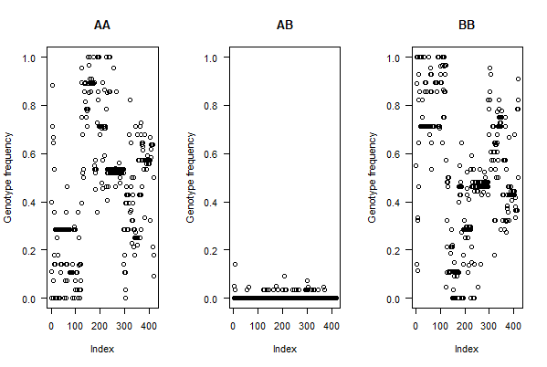
Genetic Linkage Maps:
The Initial Genetic Map default Rqtl, I noticed had a resolution of 10cM. I do not know why this is. As for the order, it appears to be moved around.
| A | B | C |
|---|---|---|
| Rqt initial Genetic Map vs physical | JoinMap genetic vs physical map | Rqtl map with all markers vs physical position |
| 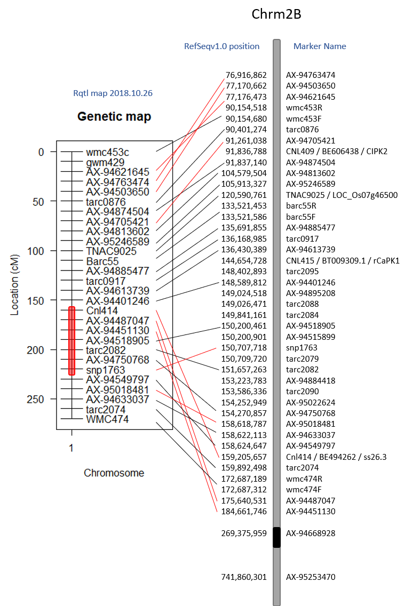 | 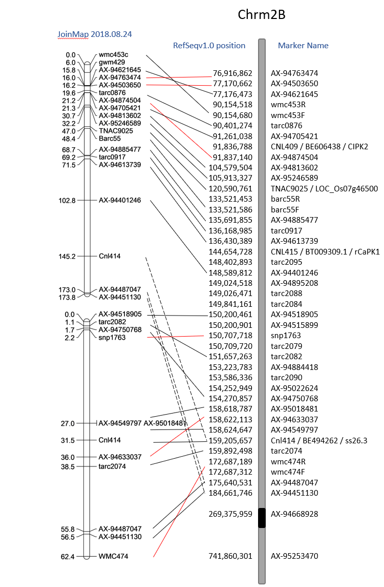 | 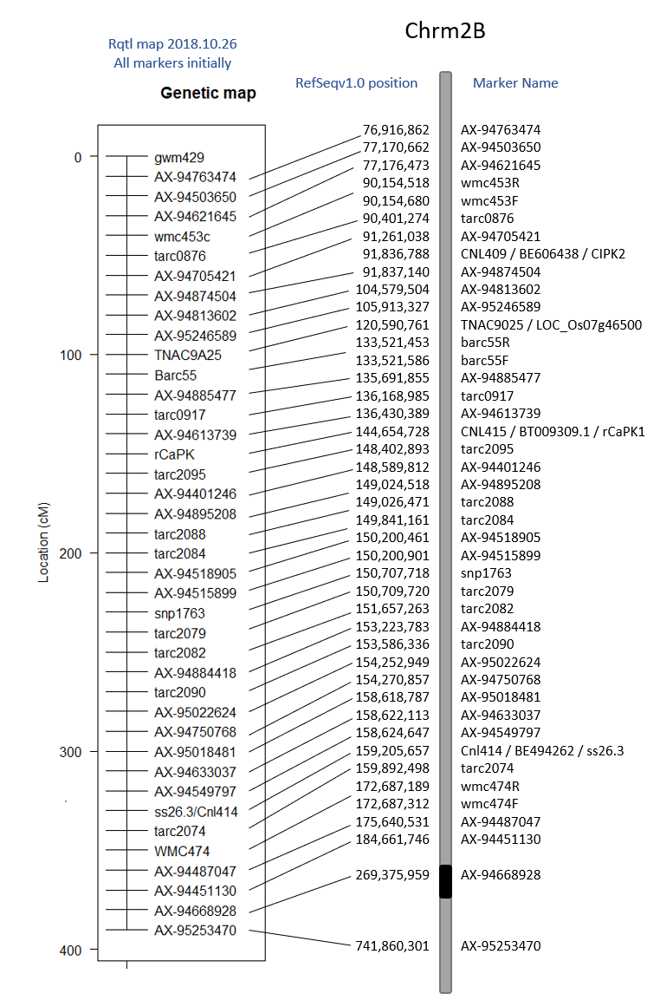 |
When I compare alernate orders using the ripple() command, it appears that markers 17-23 (shown in red section of map above) jump around quite a bit. Looking at the code results below, I realize that it can only reorganize 7 at a time (or 5), so I need to go through and compare maps as shown in the tutorial.
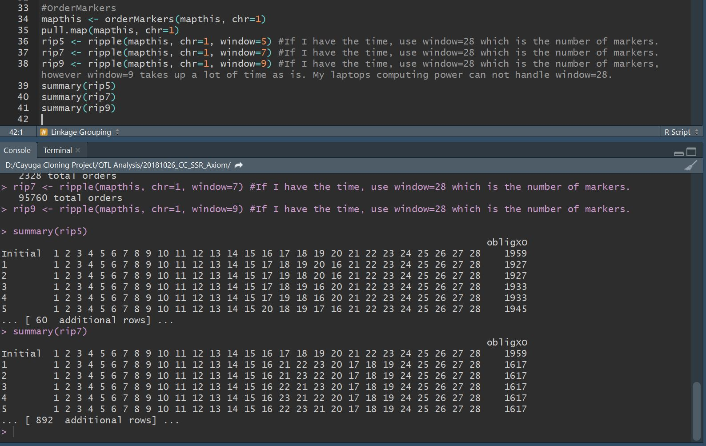
If I want to continue this route of analysis, I need to compare difference map orders and choose one to use.
CC Axiom QTL Mapping V1 ¶
2018.08.24
The initial file used is the 20180823_CC_SSR_Axiom_DataSet_v1.xlsx with the sheet names:
- "JoinMapInput" the dataset that was entered into JoinMap
- "Distal_JoinMapOut" the dataset of the final distal QTL region map copied from JoinMap
- "Prox_JoinMapOut" the dataset of the final proximal QTL region map copied from JoinMap
- "rQTL_Input" the formated dataset of the distal and proximal maps plus the phenotypic data
Creating the Linkage Map
Included the BC1F5 DNA SSR data and the BC1F7 Axiom data.
419 BC1F7 samples were used. Many samples were omitted due to increased number of hetes, duplication, or missing due to unable to germinate.
Created genetic map with JoinMap v4.0. D:/Cayuga Cloning Project/QTL Analysis/2018.08.24CCAxiomSSR.jmp
Initially I checked,
- Figure A Maximum liklihood grouping with the kosambi mapping function with all 40 markers except tarc1467 (threshold 3.0)
- Regression grouping with the kosambi mapping function with 37 markers except tarc1467, SNP760, and tarc2485 (threshold 8.0)
- Figure B Maximum liklihood grouping with the kosambi mapping function with only the 33 Axiom markers (threshold 8.0)
- Figure C Regression grouping with the kosambi mapping function with only the 33 Axiom markers (threshold 8.0)
And the Maximum liklihood grouping with the kosambi mapping function yielded the best map that doesnt have markers 'linked' 1000+ cm away, and based on the markers physical position were in similiar order (unlike the Regression grouping maps).
Genetic Linkage Maps:
| A | B | C | D | E |
|---|---|---|---|---|
| Maximum Lik. Mapping, Axiom + SSR Markers | Maximum Lik. Mapping, Axiom Markers Only | Regression Mapping, Axiom Markers Only | DISTAL region only Maximum Lik. Mapping, Axiom + SSR Markers | Proximal region only Maximum Lik. Mapping, some axiom + SSR Markers |
| 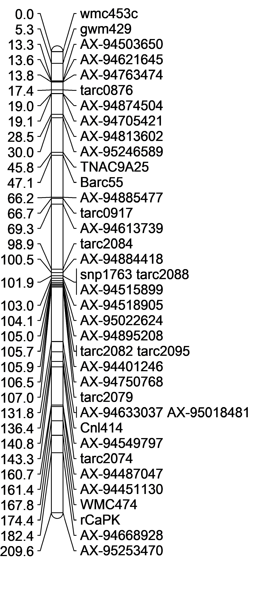 |  |
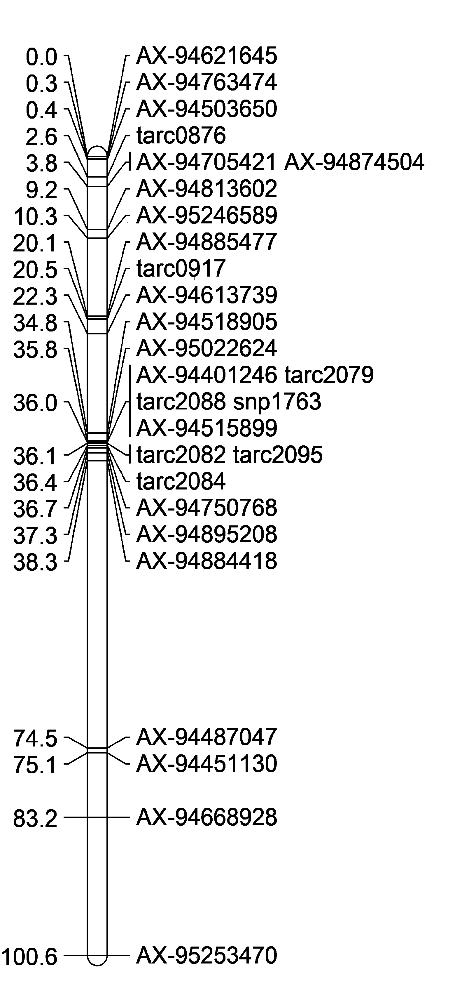 | 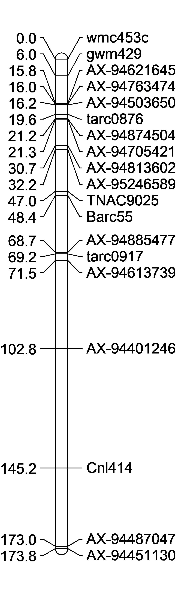 |
Remove WMC474 rCAPk
However rCaPK and WMC474 always seem to be placed in the wrong spot. So I omitted them from the analysis. They may have missed calls. I will need to re-run those markers to check for accuracy.
Also, omit AX-95253470 because its at the end of the 2B long arm and AX-94668928 because its also far away.
Seperate Maps
But, the maps alignments were still not in the right order. So then I wanted to create 2 maps, one with the distal QTL region, and the other with just the proximal QTL region.
In the end, I felt confident starting to map with these two most accurate position linkage maps (Figure D,E). There are a lot of markers not inlcuded in the proximal QTL map, and the initial group on the map is flipped compared to the physical map, however it was as close to the physical map position I could get. Once I start adding in more Axiom markers into that first grouping (from 0-2.2cM) the markers are so close together that the will not map in order. I think this may be because they are so close together.
The final maps are saved in 20180823_CC_SSR_Axiom_DataSet_v1.xlsx in the sheets "Distal_JoinMapOut" and "Prox_JoinMapOut".
rQTL Analysis
Initial
CC Axiom Genotyping ¶
DNA Extraction: J. Tanaka, S. Martinez
Axiom Marker Array: G. Ishikawa
QTL Analysis: S. Martinez
Original Email Reciept
On Aug 10, 2018, at 5:46 AM, Goro Ishikawa goro@affrc.go.jp wrote:
Hi Shantel and James, cc: Mark I'm happy to send you a genotyping result of your samples. Genotypes of 33 markers around 2B QTL were provided. In addition, six markers on 2D, 3D and 6D were added to check background QTLs (Munkvold et al. 2009).
Some markers are difficult to identify heterozygotes due to the mixtures of homoeologous sequences. Please see my comments in the 'Marker_detail' worksheet.
Positions of markers used were determined by BLAST search against IWGSC RefSeq_v1
Please do not hesitate to ask me if you have any questions.
Sincerely,
Goro Ishikawa
After looking at the Proximal QTL region, I believe it starts at position 158,618,787 - 184,661,746 intially.
| A | B |
|---|---|
Categories and genotypic dataset are found in the CC_AxiomProcessedData_2018Aug20_v1.xlsx file Sheet Geno_AB with the categories in columns AW-AY.
The phenotype needs to be combined with the recombination catergories.
Note There are 17 lines with greater than 10% of the 39 markers called as heterozygous. They were removed from downstream analysis. They may be real hetes, but they also may be DNA contaminated wells.
| Source | Entry | Note | DNA Plate | Well | NumberHetes | PercHete | DistalOnly | Prox1Only | Prox2Only |
|---|---|---|---|---|---|---|---|---|---|
| 027-3 | BC1F5-895(HR) | 027-3 | 1 | E1 | 6 | 15.38 | Cay | H | H |
| 471-5 | BC1F5-933(HR) | 471-5 | 4 | B2 | 6 | 15.38 | H | Cal | Cal |
| 1703-4 | BC1F5-354(NR-cay) | 1703-4 | 2 | B3 | 8 | 20.51 | Cay | Cay | H |
| 60-3 | BC1F5-65(HR) | 60-3 | 5 | A9 | 10 | 25.64 | Cay | H | H |
| 880-1 | BC1F5-557(HR) | 880-1 | 5 | G7 | 12 | 30.76 | Cay | H | H |
| 291-1 | BC1F5-399(HR) | 291-1 rep2 | 5 | H5 | 16 | 41.02 | Cal | H | H |
| 295-5 | BC1F5-3(HR) | 295-5 | 5 | F9 | 16 | 41.02 | Cay | H | H |
| 1600-4 | BC1F5-528(HR) | 1600-4 | 1 | D12 | 16 | 41.02 | H | H | IV |
| 969-4 | BC1F5-355(HR) | 969-4 | 4 | D4 | 17 | 43.58 | III | H | H |
| 682-2 | BC1F5-185(HR) | 682-2 | 4 | D10 | 19 | 48.71 | Cal | H | H |
| 082-4 | BC1F5-795(HR) | 082-4 | 1 | A3 | 19 | 48.71 | Cay | H | H |
| 483-4 | BC1F5-159(HR) | 483-4 | 4 | C4 | 19 | 48.71 | I | H | H |
| 028-4 | BC1F5-747(HR) | 028-4 | 1 | F1 | 19 | 48.71 | I | H | H |
| 157-2 | BC1F5-679(HR) | 157-2 rep2 | 1 | D11 | 23 | 58.97 | H | H | H |
| 1238-5 | BC1F5-70(HR) | 1238-5 | 1 | E7 | 23 | 58.97 | H | H | H |
| 174-4 | BC1F5-577(NR-cal) | 174-4 | 2 | E3 | 25 | 64.10 | H | H | H |
| 1605-2 | BC1F5-439(HR) | 1605-2 | 2 | C1 | 27 | 69.23 | H | H | H |
TaSdr-B1 ¶
Original cloning publication: Zhang Y, Miao X, Xia X, He Z (2014) Cloning of seed dormancy genes (TaSdr) associated with tolerance to pre-harvest sprouting in common wheat and development of a functional marker. Theor Appl Genet 127:855–866. doi: 10.1007/s00122-014-2262-6
The SNP at the position -11 of TaSdr-B1 produced a restriction enzyme PmlI recognition site (CACGTG) in low GI genotypes, but not in high GI genotypes.
CAPS marker protocol for TaSdr-B1 (Zhang et al., 2014):
Sdr-5 F: CGCCTACGTGTCGGCCC
Sdr-5 R: TCCGTGACGACCGCCGGG
Tm (C): 66
- PCR was performed in a total volume of 50 μl, including 25 μl2 × GC buffer I, 200 μM of each dNTP, 4 pmol of each primer, 1.5 U of ExTaq and 80 ng of template DNA.
- Reaction conditions were 94 °C for 5 min, followed by 35 cycles of 94 °C for 1 min, 66 °C for 45 s with a decrease of 0.3 °C per cycle, 72 °C for 1 min, with a final extension of 72 °C for 5 min.
- The PCR products were purified by Purification Kit (http://www.tiangen.com), then digested with PmlI (http://www.neb-china.com) according to the manufacturer’s direction and digested fragments were separated on 2 % agarose gels.
- ...The specific bands of 650 and 766 bp can be used to distinguish between TaSdr-B1a and TaSdr-B1b.
KASP Marker set for TaSdr-B1 (personal communicaton with Zhonghu He and Awais Rasheed):
TaSdr-B1-AL1: GAAGGTGACCAAGTTCATGCTTCAGCAGACTTCGACTCGCA
TaSdr-B1-AL2: GAAGGTCGGAGTCAACGGATTTCAGCAGACTTCGACTCGCG
TaSdr-B1-C: AGGATCTCGTTGGCCTTGACG
AL1 is FAM allele reports for TaSdr-B1a allele associated with slow germination; AL2 is HEX allele reports for TaSdr-B1b associated with fast germination.
From: awais rasheed awais_rasheed@yahoo.com
Date: Tuesday, August 21, 2018 at 2:29 AM
To: Mark Earl Sorrells mes12@cornell.edu, Zhonghu He hezhonghu02@caas.cn
Cc: Shantel Martinez sam594@cornell.edu
Subject: Re: 答复: TaSdr-B1 CAP markerDear Mark,
Please see the KASP marker for this gene.
TaSdr-B1-AL1 GAAGGTGACCAAGTTCATGCTTCAGCAGACTTCGACTCGCA
TaSdr-B1-AL2 GAAGGTCGGAGTCAACGGATTTCAGCAGACTTCGACTCGCG
TaSdr-B1-C AGGATCTCGTTGGCCTTGACGAL1 is FAM allele reports for TaSdr-B1a allele associated with slow germination; AL2 is HEX allele reports for TaSdr-B1b associated with fast germination.
Kind Regards
Awais
A DNA sequence BLAST of the RefSeqv1.0 wheat genome of TaSdr-B1 places the gene at the position 200,572,593 - 200,573,860 spanning the HC gene named: TraesCS2B02G215300 for HighConfidentGenesv1.1 and TraesCS2B01G215300 for HighConfidentGenesv1.0
The DNA region sequence:
chr2B chr2B:200572593..200573860 (- strand) class=gene length=1268
GCCGTGCACTCCGTCCACCCCCGTCAGCAGACTTCGACTCGCACGTGCACGCAATGGCCATGGTGCAGCCGGCGGACATGGCCGTCAAGGCCAACGAGATCCTCGCGCGGTTCCGGCCCATCGCGCCCAAGCCCGCCCTGCCGGCGTCGCCGGTGCAGGCGATCGACGGCGCCGCCGACCGCGTGCTCTGCCACCTGCAGAACAGGCCGTGCCGGGCAAGGAAGCGCGGGCGCCCGAGCGCCGTGCCGGTGTCCGCGCCGGCCGCTGCCGCCAAGAGGAAGAGGGCGGCGTACCCGGTGCCGCTCCGGTGCGCGGCGGCGGCGGCCACCGACGCGGTGGTGTCCACCGCGACGAGGGCCTATGTGTCCGTGCCGGGCAGTGCATGCATGCCGTTTGCGTCCCTCCCGCCGGCGACCGCGAGTACCGGCGGGAATCTGACGATGCTCTCGACGACCATGGTGGCGGGCGACGACGAAGAGGAGGAGAGGGACGTCCCCGTGGAGCGCGACCTGCTGCGGAAGCTGCTGGAGCCCAAGGTGATCTCGCCGCGGGCGATGCGCCCCGTAGGATCCACCATCCACGTCGAATCCATCGTCCCCGGCGCCGTCGACGCGACCAGCACCGCCGCCTCGAAGACGGCGGAGGAGGTGGAGGCGGAGGTGGAGACCGACGCGCTCCCGGCGGTCGTCACGGACTCGAGCAACCGCGTCCGGCTGGTGAACGACGCGTACAAGGAGATGGTGGGCGCGCCCGAGTGCCTGTGGCTCGGCGCGGTGGCCGCGTCGAGGAGGATCAGCGGGGAGGTGGCGCTGGTGGTGGCCGAGCAGGCGACGCTGCCGGAGTCCCCAGGGGGGTTCTCGTGCACGGCGAAGATCGAGTGGGAGTGCCGCGGCGGCGAGCGGGCTTCCTTCCATGCAGCGTGCGACGTCAGCCGGCTGCAGTGCGAGTACAGGCACTACCTCTTCGCCTGGAGGTTTCGCACCGCCGATGCATCATCGTCCGGCAGCAGCCACCGCGCCGGCGGCGACGCATGAGACACTCAAGACCCCAAGCAGCGTGCGAAACTAAGTGCATAGGTCATAGATTAAGGTGCATGTTTTGTTACTGTTAAACTACTAGGTTAAGGTGCATGTTTAGTGGTACTGGTAAACCTAGGTGAACTGTTTCCTTTTTTGGGAAGCCTGCATGGTGCATGCCCGGGTTCTAAAGTACATATGATGTTGACCGGACAATGCAAGGGAAAAATATGACGTGTGCTTTAGTCAATT
Visual of the flanking markers | Yellow vertical line indicates the gene region

Zoomed in on the region | Yellow vertical line indicates the gene region

Looking up TaSdr-B1 in the Wheat eFP Browser
CC BC1F7 DNA + Old Genotyping¶
Currently I have BC1F7 plants at Helfer 2018, Snyder 2018, and the greenhouse 2018. I also have 5 plates of DNA extracted.
Out of just the lines that had DNA extracted, I aligned the lines to the SSR+TNAC data taken on the F5 DNA.
| Group | N | GWM429 | wmx453c | TNAC9025 | cnl414 | wmc474 | rCaPK |
|---|---|---|---|---|---|---|---|
| Cal | - | - | - | - | - | - | |
| Cay | R | R | R | R | R | R | |
| only | distal | qtl | |||||
| I | 5 | R | - | - | - | - | - |
| II | 10 | R | R | - | - | - | - |
| III | 114 | R | R | R | - | - | - |
| IV | 9 | - | R | R | - | - | - |
| V | 12 | - | - | R | - | - | - |
| only | proximal | qtl | |||||
| VI | 0 | - | - | - | R | - | - |
| VII | 10 | - | - | - | R | R | - |
| VIII | 72 | - | - | - | R | R | R |
| IX | 21 | - | - | - | - | R | R |
| X | 0 | - | - | - | - | - | R |
| XI | 6 | - | - | - | - | R | - |
| Total | 268 |
Note:I am ignoring Barc55 genotypes
I dont think the old phenotype data (2009-2011) tell us much with the large intervals we have. I need to narrow down those intervals and also try to keep the distal QTL region seperate from the proximal QTL region in my analysis.
I also aligned the axiome marker genotyping done on a few lines. The recombination events seen in this genotyping was not included in the grouping above. However, you can see there are some crucial recombination events in these line. These markers are being screened against the whole CC BC1F7 set (plates 1-5) by Goro Ishikawa the summer 2018. DNA will be sent to him June 28th, 2018.
820k Axiom Array Notes ¶
Publications:
820k An efficient approach for the development of genome-specific markers in allohexaploid wheat (Triticum aestivum L.) and its application in the construction of high-density linkage maps of the D genome doi: 10.1093/dnares/dsy004
SNP Platforms High-density SNP genotyping array for hexaploid wheat and its secondary and tertiary gene pool doi: 10.1111/pbi.12485
Directly from the CerealsDB website:
The Wheat Improvement Strategic Programme (WISP) is pleased to release the information associated with both the 820K and 35K Axiom® arrays.
820K Axiom® Array data
Please note that the 820K data set is very large and cannot easily be opened and handled in Microsoft Excel format. Thus we are making the data available in two different formats:
A) For those with bioinformatics support, the whole file may be obtained as a single zipped tab separated txt file; it is best not to try to open this in Excel! Please click here to download.
B) Alternatively, the file has been divided into five equal sized chunks (files A - E), each containing 164,000 markers. These 'chunks' have also been saved as zipped tab separated txt files and may be opened from within Excel. Please click the each file, A - E, in turn File A, File B, File C, File D, File E to download.
To open/download the 820K wheat Axiom® array probe set, please click here.
genotype calls were assigned as follows:
0 = AA, 1 = AB, 2 = BB, -1 = No call
Scoring on both arrays
Where two samples from different sources share the same name, they are distinguished by the addition of the supplier's initials as a suffix.
Please note that for convenience all of our marker data sets are scored as AA, AB or AB, however, due to the nature of the three different genotyping platforms and the polyploidy nature of the wheat genome, these designations do not necessarily represent the two homozygote and the one heterozygote states, instead they simply represent the position of the clusters against the X and Y axis defined by the software packages. For further information we recommended that you contact either illumina (iSelect), LGC (KASP) or Affymetrix (Axiom).
Please acknowledge
Finally, one last plea, like all of our previous data, WISP is making its data public so that it can get into the hands of those who can use it best; the breeders and researchers. If you are one of the groups which have made use of WISP data, including BS and BA markers, please do acknowledge the source of the probes when you present your results at conferences or in manuscripts.
VCF file download
A VCF file for the axiom 820K SNPs can be downloaded from here.
QPhs.cnl-2B.1 region ¶
Purpose: After reading the previous publications on about the QPhs.cnl-2B.1 and making a list of flanking markers, I wanted to see where the markers fell on the RefSeqv1.0 chromosome.
| Query | Databank | Score | Identity | Percentage | Expect | Start | End |
|---|---|---|---|---|---|---|---|
| Barc328 | IWGSC RefSeq v1.0 chromosome 2B only | 585 | 355/376 (642) | 94 | 3e-165 | 432,126,639 | 432,126,264 |
| TaSdr-B1a | IWGSC RefSeq v1.0 chromosome 2B only | 2702 | 1502/1503 (1503) | 99 | 0.0 | 200,574,062 | 200,572,560 |
| Wmc474 | IWGSC RefSeq v1.0 chromosome 2B only | 269 | 154/156 (154) | 99 | 5e-71 | 172,687,314 | 172,687,159 |
| BE424118 | IWGSC RefSeq v1.0 chromosome 2B only | 884 | 490/490 (490) | 100 | 0.0 | 152,158,268 | 152,157,779 |
| BE406677 | IWGSC RefSeq v1.0 chromosome 2B only | 711 | 394/394 (394) | 100 | 0.0 | 140,776,716 | 140,776,323 |
| BARC55 | IWGSC RefSeq v1.0 chromosome 2B only | 818 | 453/453 (453) | 100 | 0.0 | 133,521,624 | 133,521,172 |
| BE445628 | IWGSC RefSeq v1.0 chromosome 2B only | 1406 | 779/779 (779) | 100 | 0.0 | 121,677,613 | 121,676,835 |
| TNAC9025 (LOC_Os07g46500) | IWGSC RefSeq v1.0 chromosome 2B only | 203 | 304/413 (3198) | 74 | 2e-49 | 120,590,761 | 120,590,365 |
| BE606438CIPK2 | IWGSC RefSeq v1.0 chromosome 2B only | 767 | 425/425 (425) | 100 | 0.0 | 91,836,788 | 91,837,212 |
| WMC453 | IWGSC RefSeq v1.0 chromosome 2B only | 547 | 409/484 (480) | 85 | 5e-154 | 90,154,756 | 90,154,297 |
With blast sequences located: \Cayuga Cloning Project\Genotyping\2B marker sequences.docx
Between markesr WMC453 and TNAAC9025: there are
- 300 high confident genes (pos 90,348,357-119,634,160) HighConfidenceGenesv1.0_Start_GeneID.txt
- 1 polymorphic 9k SNP markers out of 23 total in the region (pos 91,837,246-118,286,501) Infinium9K-chr2B-90138169..121644305.txt
- 647 90k SNP markers (unknown how many are polymorphic) Infinium90K-chr2B-90138169..121644305.txt
Also, looking in the CayCal_marker_from_Axiom_Nov19-15.xlsx file 3 additional Axiome markers between WMC453 and TNAC9025: 1) AX95246589 2) AX94813602 and 3) AX94874504
Then there are 4 GBS Markers that are polymorhic in the region that I found from the MASTER GBS files after filtering through the data for only Cayuga and Caledonia polymorphisms. I found 203 markers polymorpic on the 2B chromosome. Of those 46 markers where from the distal end of the short arm up until barc 55 position. And of those, only 4 were between cnl409 and barc55. D:\Cayuga Cloning Project\Genotyping\Cay Cal GBS Data.R
I still need to look up EST marker polymorphisms that were done by Somyong?
Summary of the previous fine mapping and identification of new polyorphic markers
2018.11.27
I just noticed in the Master GID list, that there are a lot of Cayuga/Caledonia lines that are listed into the Master GID list, which means we have both phenotype AND GBS data. I can potentially use this to look at the preliminary GBS SNP data points in the QTL regions.
| GID | Original | 2010 | Final | Discarded | Kernel | Chaff | Awn | Hard | DArT | SSR | Pedigree |
|---|---|---|---|---|---|---|---|---|---|---|---|
| 270 | Cal 4PHS-10 | Bridgeport-270 | 4 | W | W | N | S | Y | Y | Caledonia/Cayuga//Caledonia 4-10 (BC1F4select) | |
| 271 | Cal 4PHS-6 | Cal 4PHS-6-271 | 4 | D | W | W | N | S | Y | Y | Caledonia/Cayuga//Caledonia 4-6 (BC1F4select) |
| 275 | NY103-208-7263 | NYW103-208-7263-275 | 4 | W | W | N | S | Y | Y | Cayuga/Caledonia | |
| 276 | NY103-72-7179 | NYW103-72-7179-276 | 4 | W | W | N | S | Y | Y | Cayuga/Caledonia | |
| 277 | NYW103-21-9183 | NYW103-21-9183-277 | 5 | DY | W | W | N | S | Y | Y | Cayuga/Caledonia |
| 278 | NYW103-70-9232 | NYW103-70-9232-278 | 5 | W | W | N | S | Y | Y | Cayuga/Caledonia | |
| 279 | NYW103-187-9166 | NYW103-187-9166-279 | 5 | W | W | N | S | Y | Y | Cayuga/Caledonia | |
| 280 | NYW103-193-9172 | NYW103-193-9172-280 | 4 | W | W | N | S | Y | Y | Cayuga/Caledonia | |
| 281 | NYW103-226-9195 | NYW103-226-9195-281 | 4 | DL | W | W | N | S | Y | Y | Cayuga/Caledonia |
| 282 | NYW103-57-9222 | NYW103-57-9222-282 | 5 | W | W | N | S | Y | Y | Cayuga/Caledonia | |
| 283 | NYW103-90-9245 | NYW103-90-9245-283 | 4 | W | W | N | S | Y | Y | Cayuga/Caledonia | |
| 284 | NYW103-102-9103 | NYW103-102-9103-284 | 5 | W | W | N | S | Y | Y | Cayuga/Caledonia | |
| 285 | NYW103-119-9115 | NYW103-119-9115-285 | 4 | W | W | N | S | Y | Y | Cayuga/Caledonia | |
| 286 | NYW103-168-9149 | NYW103-168-9149-286 | 4 | DY | W | W | N | S | Y | Y | Cayuga/Caledonia |
Even more, we have a TON of Cayuga crosses in the MASTER GID list, which like I said, has PHS pheno and geno data. So I can use these lines from a Cayuga cross to see if it has the GBS marker close to the QTL, we can see how high the correlation of pheno to GBS geno. I dont think this will help with the cloning efforts, but I think it will definitely help fith the determination of the fine mapping.
| GID | Original | 2010 | Final | Discarded | Kernel | Chaff | Awn | Hard | DArT | SSR | Pedigree |
|---|---|---|---|---|---|---|---|---|---|---|---|
Cayuga/Caledonia BC1F7 DNA Extraction ¶
Purpose: The BC1F7 seeds were planted for DNA extraction and grown out for seed increase and physiological testing
The DNA was extracted by J. Tanaka on 2018.04.26 | Some of the DNA will be sent to Japan for axiome sequencing
The remainder of the DNA will be used for fine mapping of the QPhs.cnl-2B.1. Markers of the QTL region still need to be created.
An image below of the DNA plate layout. The yellow highlight just indicates wells from the intial plate 5 were integrated into empty wells of plates 1-4 | DNA was harvested from one plant
Full details found in the excel sheet: \Cayuga Cloning Project\Genotyping\BC1F7 GH 2018 Set 1 layout.xlsx

71 line that did not grow in the GH/DNA was not harvested: DNA was harvested from the Field on 2018.05.14 | Plate # 5
- 3 leaves from 3 different plants, unless there were only 1-2 plants available
- All were harvested from Helfer, except entries: 1839-1 and 068-4 which were harvested from Synder
TO DO: If any lines from plates1-4 were too low in DNA concentration, I can reharvest and add to the 5th plate, since there is room. Also, there are 10 lines that did not grow at either the field or GH that I am trying to rescue and re-plant in the GH. If we arent pushed for time, I can add DNA to plate # 5 also
Cayuga/Caledonia BC1 population¶
Cayuga/Caledonia was backcrossed as stated in Somyong et al., 2014

These ~470 BC1F5s are homozygous Cayuga in the flanking region but is in a Caledonia BC background (NOTE: some Cayuga genes other than the flanking QPhs.cnl-2B.1 region will still be present, but a reduced amount compared to a RIL population.
Questions:
- What is HR, NR-cal, NR-cay? : Homozygous Recombinant | Non-Recombinant -Caledonia & Non-Recombinant -Cayuga used as controls
The dataset used for fine mapping was from PHS & Germination from 2008 Ketola, PHS from 2008 Snyder, PHS Ketola 2009, and PHS Snyder 2009.

Somyong et al., 2014 QTL analysis:
For QTL Cartographer, composite interval mapping (CIM) with model 6 was used. Precise selection walking speed (cM) was 0.5. The significance threshold was calculated at p < 0.01 by 1,000 permutations.
Found this useful information in a file:
| Name_original | Name_paper | LG | Pos |
|---|---|---|---|
| ss57-2 | cnl406 | 1 | 0 |
| gwm429 | gwm429 | 1 | 0.3 |
| ss3-2 | cnl407 | 1 | 1.4 |
| ss66-2 | cnl408 | 1 | 1.5 |
| CDO64 | cdo64 | 1 | 2.2 |
| ss44 | cnl410 | 1 | 4.6 |
| ss4-4 | cnl409 | 1 | 5.2 |
| Wmc453c | wmc453c | 1 | 7.7 |
| Barc55 | barc55 | 1 | 11.9 |
| ss47.5 | cnl411 | 1 | 15.6 |
| ss20 | cnl413 | 1 | 16.1 |
| ss26.3 | cnl414 | 1 | 17.6 |
| wmc474 | wmc474 | 1 | 18.8 |
| rCaPK1 | cnl415 | 1 | 20 |
Somyong et al., 2014 identified recombination breaking points between TNAC9025 and Barc55, yielding in a Cayuga PHS tolerant phenotype if you had TNAC9025 Cay (A) allele.

BC1Fx Genotype Data Notes | 2018.04.30 ¶
16 BC1F5 families were ran on the 9k SNP array file
898 markers poylmorphic |
707 Cayuga & Caledonia poylmorphic; 191 Cayuga & Caledonia monomorphic, but BC1 F5 polymorphic
46 BC1F8 families were ran on the axiome 2B region file
Axiom array (Japan) DNA was extracted 2018.04.26 by J. Tanaka.
set 1: 40% germinated | Vrn out ~ 2 wk (around 2018.05.11)
set 2: 80% germinated | Vrn out ~ 5-6 wk (around 2018.06.01-08)
4 DNA plates Need entry list
Sending Emails after R run¶
Using the package mailR
library(mailR)
sender <- "sam594@cornell.edu" # any email address
recipients <- c("shantel.a.martinez@gmail.com") # Must be a gmail account
##Different input variables you can edit and change as you wish
t <- Sys.time()[3]
r <- (proc.time()[3]-timeIn)/3600 #the command `timeIn=proc.time()[3]` needs to be at the beginning of the run to record when it started
folds = 5
nIter = 12000
body <- paste("Attached is the boxplot of the RKHS GS model of 100% and 80% subset training sets and the table of PA's | Finished the run at =",t,"| nIter =",nIter, "| ", folds,"- folds ", "| time to run =", r, " minutes")
send.mail(from = sender,
to = recipients,
subject="Cross-Validation Results 20181205",
body = body,
smtp = list(host.name = "aspmx.l.google.com", port = 25),
authenticate = FALSE,
send = TRUE,
attach.files = c("/file1.png","/file2.csv","/file3.png"))
Reviewer Etiquette¶
Advice from Mark
- Formatting name nomenclature? Define somewhere abbreviation,
- Hold back on grammer corrections, how to define what is a personal preference versus writing errors?
- PHS tolerance (maintaining quality during sprouting) versus resistance (doesnt sprout so quality is not changed)?
- PHS decreasing yield? One way to approach ask, for a citation on yield. In abstract, state in intro they should provide citation.
- Eastern last name first name correct citation? Dale et al 2017 based on the publication and the pubs citation, but the actual surname/family name is Zhang et al 2017. Even if last name is given name, still us it.
- If you see somthing that doesnt appear to be correct and can cite, this doesnt look correct but I dont have a citation I can provide.
- Dont write as grant proposal, dont promote science, report in unbiased way and interpret in unbiased way.
- Write honest review, with honest opinion about things.
- always double check experimental design details, even if they refer to a paper.
- youll also find that some authors will write like its a proposal (trying to sell you on the idea), when they should be writing and unbiased story, Mark will reject those types of proposal-like manuscripts.
2016 US Wheat Grown By Region | NAWG

R. Bernardo Quant Gen ¶
Notes
Session I
- Understand the difference between Genotypic value (Gij) and breeding value
The dominance value of one allele depends a) on how strong the doiminance is, and also b) the frequency of the other allele (q or p)
deviation from the mean, and the mean plus
Session II
- K0.01=2.67 and K0.1=1.76 a constant known fact, like a statistics table?
- Pg 84, he keeps referring to per se means, what does he mean? The mean of RI section of equations are what he uses, but is that it?
- Pg 105 Fig 5.7: what does the LD of the su1 gene mean?
Idea for PHS Breeder Website¶
Map on website
Make things clickable
Click number to see citation, all the paper found region, or all traits, maybe the KASP marker to use
Breeders want seq for marker, expected sizes, and what are good parents to cross to it.
Examples with cultivars that carry this allele
Line names – Scores for different years
Either big table, or figure out how to make a set of points
Breeding Prog. Genotype File Notes | Meeting with Nicholas Santantonio | 2018.04.24¶
Master GBS_raw data file is the folder that has all of the sequences without any calls or filtering
PHS data is organized (?) from 2007-2016, even though we have 2017 data. 2018 data I will obtain.
Genotype Identification (GID) numbers are given to the Master breeding lines
1-1371 where approx. 1130-1160 was never genotyped.
Lines from MSU and Ohio were integrated into the program but given their own GID: OH1-OH### or MSU1-MSU###
Plot numbers in all files should be consistent when comparing files and their GID. The file Master2007thru2016_June2017 has the GID plot loc year etc. data all in one organized file
Merge eveything by loc yr plot is the safest; those havent been messed up ever
Current Genotype Files Reference N. Santantonio Dissertation Chapter for genotyping methods.
- Tassle RefSeq v1.0
- 1447 total : 1371 NY lines + OH + MSU lines
- about 11,000 GBS SNPs
- imputed using random forest within each chromosome
- Ximp can use 30% or 50% missing data imputed file.
- XnoHet Hete's were changed to the major allele, but I can us the Ximp dataframe instead
- the maf reported in the datafiles are with all 3,000 individuals, not after individuals were removed from filtering, re-calculate later.
Kernel Color was taken the last 3 years.
2015 included many lines that were only measured once; about 400 with <2 observation but KC was taken
R: red | W: White | S/M: mixed | #R: precent red
Most of the older material is white, until recently has Sorrells been breeding for red.
GENERAL LAB NOTES¶
James Tanaka [c] 607-327-0872 [e] jt27@cornell.edu [o] Bradfield 416A
David Benscher [c] 607-327-0871 [e] db57@cornell.edu
Rm 416 | LiqN stored | Shared among 5-6 labs| 8429 Rm 420 | Office spaces | 3714
Printers
B&W 128.84.15.55 HP LaserJet M602
Color 10.84.15.8 Color LaserJet 5550